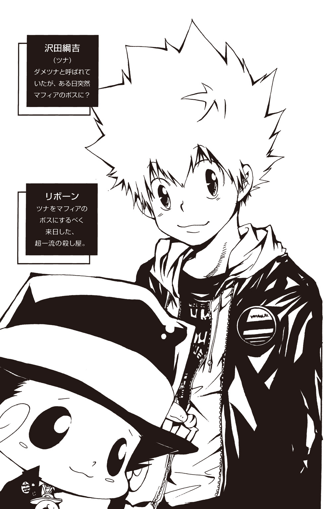

| 家庭教師ヒットマンREBORN! 隠し弾 1 骸・幻想 | |
| 天野明 & 子安秀明 | |
この本は縦書きでレイアウトされています。
また、ご覧になる機種により、表示の差が認められることがあります。

この作品はフィクションです。
実在の人物・団体・事件などにはいっさい関係ありません。

人里から遠く離れた峻険たる山の奥。
太陽はすでに落ち、月や星の光もとどかない深い闇の広がる森で、いま人の形をした二匹の《獣》たちが牙を交えていた。
しぱぁぁぁぁんッ！
闇を切り裂いてあらわれた鞭が、黒髪の少年の武器であるトンファーにからみつく。
「.....................」
スッと全身の力をぬく少年。
そこに一瞬のためらいもなかった。
「......っ」
闇に包まれ姿は見えないながら、鞭の持ち主の動揺がかすかに伝わってくる。
すかさず少年は走り出した。
常人なら歩くことすらできない夜の険しい山道を駆け抜け、一直線に獲物に迫る。
ガキィィィィィィィィィィッ！
「......く！」
頭めがけて振り下ろされたトンファーを、鳶色の目の青年はかろうじて腕で防いだ。みしりと骨のきしむ感触に顔をしかめつつも、その口もとには楽しむような笑みが浮かぶ。
「っとに容赦なしだな、おまえは」
「してほしかったの？」
「ハン」
青年の長い足が鞭に負けじとしなり、黒髪の少年の脇腹にたたきこまれる。冷静にもう片方のトンファーでガードする少年。しかし、それは青年にとって計算済みだった。蹴りの反動を利用して少年から距離を取り、得物の鞭をトンファーから解き放つ。
だがそこへ息つく間もなく少年が襲いかかる。青年もまた黒い鞭を振るってそれを迎え撃つ。
互いの得物が互いの肉体を打つも、寸前で急所をはずし決して致命傷は受けない。血と汗を散らしながら、両者は踊るようにあざやかな動きで互角の死闘を繰り広げていた。
実力は拮抗。
しんと静まり返った闇の中、息すら止めてぶつかりあう二人の戦士は――
♪ 緑たなびく並盛の～
大なく小なく並がいい～ ♪♪
「......は？」
不意にひびいたのどかな歌に、青年の肩がカクリと落ちた。
一方の少年は、落ち着いた表情のまま携帯電話を取り出し通話ボタンを押した。
「もしもし」
「って、おまえの着信かよ......」
戦いに水をさされてしまい、青年はやれやれといった顔で鞭をおろした。
「ま、いいか。そろそろ修業も切りあげようと思ってたとこだ。ロマーリオ」
後ろに向かって声をかけると、木陰からスッと黒いスーツの男が現れた。青年より年上に見える口髭の男は、しかしうやうやしい態度で彼にタオルを差し出した。
「おつかれさん、ボス」
「おう」
当然というふうにそれを受け取る青年。
このロマーリオと呼ばれた男、日本から遠く離れたイタリアのマフィア『キャバッローネ・ファミリー』の一員であった。そして、彼らの尊敬と忠誠を一身に受ける青年こそキャバッローネの若き10代目ボスなのである。
その名を『跳ね馬』ディーノ。
強靱たる黒き鞭を得物とし、その若さに似合わぬ武威とカリスマ性をもって裏社会で一目置かれている人物である。
そんなディーノと互角に戦っていた黒髪の少年も当然ただものではなかった。
「おい、恭弥。つーわけで修業はここまでだ。オレは用があって先に行くが、おまえは身体を休めてから――」
――ピ。
携帯を切った少年は無言のままディーノに背を向け歩き出した。
「え......おい、どこ行くんだよ？」
完全無視。
少年はあっという間に夜の闇の中に消えていった。
「ったく......」
やれやれと頭をかくディーノ。
このときディーノは知らなかった。少年の受けた電話が、彼の通う並盛中学校の風紀委員からのものであったことを。そして、それが彼の愛する学校で異変が起きているとの報告であったことを。
少年の名は雲雀恭弥。
並盛中を誰より愛する風紀委員長でありながら、誰より冷酷で戦いを好む最強の不良である。
並盛中の校舎は、いま裏社会の抗争の舞台となっていた。
ボンゴレリング争奪戦――
イタリアでも屈指のマフィア『ボンゴレ・ファミリー』の次期ボスの座をかけて、その継承の証である七つのリングを奪い合い、二人のボス候補とその部下が毎夜バトルを繰り広げていたのである。
ボス候補の一人、ツナこと沢田綱吉と親しいディーノは、彼の側について戦う雲雀の『家庭教師』となり、実戦による修業を続けてきた。心情としては直接ツナに味方して戦いたいところだったが、ボンゴレとキャバッローネの同盟関係ゆえに表だってボス候補の一方に味方することはできなかった。ツナの味方である雲雀を鍛えるという側面でのフォローが、彼にできる最大限の助力だったのである。
ちなみに、雲雀は抗争の舞台が愛する学校であることを知らされていなかった。ディーノは知っていたが、雲雀が修業を無視して乗りこむことを懸念し、秘密にしていたのである。
その懸念は的中し、部下によって異変を知らされた雲雀は、まっすぐに並盛中へ向かっていたのだが......そのことをディーノが知るのは、彼もまた一足遅れて並盛中に到着したあとのこととなる。
「しかし、最後の最後までかわいげのねぇじゃじゃ馬だったぜ」
トンファーの直撃を受けた腕をさすりながら嘆息するディーノ。
事実、ディーノでなくともこれほど扱いにくいと思わせる『生徒』はいなかったはずだ。
言う事は聞かない、何を考えているかわからない、そのくせ戦闘意欲だけはあふれるほどにみなぎらせ、家庭教師であるディーノを殺す気でかかってくる――
「リボーンさんの気持ちがボスにもわかったんじゃねーか」
「はぁ？」
リボーン......それはかつてディーノがマフィアの英才教育を受けた家庭教師の名だ。イタリアの裏社会にその名をとどろかす暗殺者でありながら、その実体は『赤ん坊』というとにかく型破りな人物だった。
リボーンは、いまツナの家庭教師を務めている。その縁もあって、ディーノはツナに味方していたのだ。
「リボーンの気持ちって......」
小さく肩をすくめてみせるディーノ。
「冗談よせよ。オレが恭弥みたいな......」
――いや。
ディーノは内心で自分の言葉を否定する。
確かにかつての自分は雲雀とは違った意味で問題児だった。
しかし自分は変わった。
あの......忘れられない運命の事件をきっかけとして。
（ロマーリオ......）
ディーノは常に自分の側にいて補佐してくれる第一の部下を見る。
（いや、ロマーリオだけじゃない。ファミリーの全員がオレを信じてる。信じてる限りオレは応え続ける。そう......決めたんだ）
服の上から、左腕に刻まれた刺青にそっとふれる。
それは誓いだった。
まだ自分が雲雀と同じくらいの年齢だったころ――キャバッローネ・ファミリーを背負って立つ『跳ね馬』になると決意した時の。
１
イタリアの背骨。そう言われるアぺニン山脈の片隅に連なる緑深い山中。
羊の放牧が盛んな丘陵地帯から遠く離れ、ほとんど人が訪れることのないうっそうとした森の中で――
「ぎゃぁぁぁぁぁぁ――――――――――――――――――っ！」
一匹の白い羊が狼の群れに追われていた。
近代に入って西欧では狼の個体数の減少が続き、一時期は日本のように絶滅も危惧されていた。しかし保護活動の成果が実り、現在も狼たちは元気に野山を駆けめぐっているというわけなのだ。
羊にとってみれば、はなはだ迷惑な話であるが。
「うわぁぁぁっ！ 来んな！ 来んなってよぉ！ オレなんか食ってもぜってーうまくねーっ！ 保証する――――っ！」
しかしそれは、自然の中で繰り広げられる生存競争の光景とはすこし違っていた。
追われている羊はなんと人間の言葉を話し、人間のように二本足で歩き、
「おぶっ！」
人間のように木の根につまずき、人間のように豪快に地面とキスをした。
そのスキを見逃さず、餓えた狼の群れは羊をぐるりと取り囲む。
「逃げんじゃねーぞ、ディーノ」
その声に羊の顔が引きつる。
「......てっ、てめぇ、リボーン！ どこにいやがんだ、このガキ――――っ！」
「ここだぞ」
「！」
羊の目と鼻の先。
そこにいたのは小さな子狼......ではなく、その着ぐるみをかぶった赤ん坊であった。頭にはなぜかカメレオンがちょこんとのっかっている。
彼こそ、リボーン。
着ぐるみ姿では限りなく説得力にとぼしいが、彼はいま、長い伝統を誇るマフィア『キャバッローネ・ファミリー』の10代目ボス候補に家庭教師をしている真っ最中だった。
で、そのボス候補はというと、
「おい、リボーン、そろそろ説明してくれよ。なんでオレがこんな格好しなくちゃなんねーんだよ！」
羊の着ぐるみを着せられた少年ディーノは、怒りもあらわに叫んだ。
しかし、リボーンのほうはしれっと、
「よく似合ってるぞ」
「そーゆーことを聞いてんじゃねーよ！ だから、なんでオレがこんな......」
ズガ――――――――ン
「ひぃぃぃっ！」
足もとに撃ちこまれた銃弾に、ディーノは一瞬にして青ざめる。
「家庭教師の言う事は絶対だぞ。おまえを立派なマフィアのボスにするのがオレの仕事だ」
「あ......ああ......」
完全に腰をぬかしたディーノはもはや返す言葉もない。赤ん坊でありながら、リボーンの実力は裏社会でも指折りであり、どうやっても歯が立たないことを、ディーノは身にしみて思い知らされていた。
「む、無理だ......オレがこんな......狼をやっつけるなんて......」
「そんなこと言ってねえぞ」
「え？」
ディーノの目に希望の光がともる。
「なんだよ......おどろかせるなよ！ いきなりこんな格好させて狼なんかけしかけるから、オレはてっきり......」
「やっつけるんじゃなくて、こいつらみんなおまえのファミリーにしろ。そうすれば牧場の羊も襲われなくなって一石二鳥だぞ」
「そうかファミリーに............って」
ディーノの笑顔が一瞬にして引きつる。
「よけいできんわぁぁぁ――――――――――――っ！」
悲痛な絶叫に続き、いっせいに襲いかかる狼の鳴き声が、のどかな野山いっぱいに響き渡っていった。
「はぁ、はぁ......リボーンの野郎ぉ......」
ディーノが街にある宿舎に帰ってきたのはすっかり日も暮れた頃だった。
ディーノの通う学校は遠方から通う生徒のために宿舎が設けられており、彼もそこで暮らしている。
――嫌々ながら。
「おい、ディーノ」
ロビーの前を通りかかったとき、ディーノを呼び止める声がした。
「..................」
最悪だ......言いたくなる自分をおさえディーノはぎこちない笑顔を作る。
「......よ、よう、ズッコ」
ロビーから出てきたのは、でっぷりと腹に脂肪をつけた大柄な少年だった。ニキビだらけの顔に下品な笑みを浮かべ、つりあがった目はギラギラと好戦的に輝いている。万国共通といってもいい不良少年そのものの容貌である。
にやにやしながらロビーの中でこちらを見ている者たちも、みな彼と似たようなものだ。いや、この宿舎にいる全員が同じ種類の人間と言っていい。
彼らはすべてディーノのようにマフィアとつながりのある子どもたちだった。表向きは隠しているものの、彼らの通う学校は、そんな一般校では問題のある者ばかりが集められた特別なところなのである。
ほとんどの生徒がケンカっ早いワルというこの学校で、ディーノは完全に浮いていた。
キャバッローネの現ボスの一人息子であり早くから後継者として育てられてきたディーノだったが、アットホームなファミリーの中でこの上なく過保護にされてきたこともあり、争いごとの嫌いな性格であった。
やがて９代目のボスは気づいた。このままでは、とても息子にボスの座は勤まらない。
そして彼は、嫌がるディーノをこうしてファミリーのシマから遠く離れた危険な学校に一人で送りこんだのである。すこしでも立派な『男』になって帰ってきてほしいとの願いをこめて。
しかし――
「今日はなんだかイカしたカッコしてんじゃねぇの。なぁ、ディーノ」
なめまわすような目でディーノの周りを歩くズッコ。狼の危機をなんとか脱したディーノだったが、その服は爪や牙であちこち引き裂かれボロボロという有様だったのだ。
「ホント、おまえにはぴったりだぜ。そのファッション」
ロビーの野次馬たちから笑い声があがる。もちろんズッコも腹をふるわせ大笑いだ。
「..................」
ディーノのホホがピクピクッと引きつる。しかし、言い返そうという気はまるで起こらない。同学年のワルのボスであるズッコに逆らえば、この先ずっとあらゆる手段で悲惨な目にあわされることは目に見えて――
「うるせー、ブタ野郎」
笑い声がぴたりと止まった。
ズッコの目がぎょろりと動き、自分の前に立つディーノを見る。
「なんか言ったか、ディーノ？」
「え？ オ、オレは......」
「オレはてめーみてえな汚くてベタベタしたやつが大嫌いだ。早いとこ死んじまえ、イノブタ野郎」
「って、おい、リボぉぉぉぉぉーンっ！」
いつの間にか自分の足もとにちょこんと立っていた赤ん坊の罵詈雑言に、ディーノは一気に青ざめる。
「いまのはみんなディーノが言ってたセリフだぞ」
「ウソつくんじゃねぇっ！ 全部おまえが勝手に言ったんじゃねぇか！」
「でもおまえが思ってることだろ」
「そ、それは......」
「この、太って脂ぎって汚くてベタベタした全身トロ肉のチャーシュー野郎って」
「そこまでひどいことは思ってねーよ。太って脂ぎって汚い顔ってとこまではあってるけど......」
「なるほどなぁ」
「！」
怒りにふるえるズッコの声に、ディーノはハッとなって口を閉じた。
「い、いや、待てよ、ズッコ。だからいまのは、その、事故っつーか......」
「事故にあってつぶされたカエルみてぇな顔してるって」
「リボーン！ てめぇぇっ！」
ガッ！ ズッコは問答無用でディーノの胸倉をつかみ、高々とつりあげた。
「やめてくれよ！ 全部ちがうんだよ！」
「見苦しいぞ、ディーノ。キャバッローネの10代目がそれぐれーのやつにでかい顔させてどうする。さっさとやっちまえ」
「無茶なことばっか言ってんじゃねーよ！」
ズッコの腕がぐっと盛りあがり、拳が大きく後ろに引かれる。
「っ！」
ディーノは思った。なんでこんな目にあわなきゃならねーんだ！ それもこれも自分をこんなところに送りこみ、おまけに赤ん坊の殺し屋なんていうわけのわからないやつを家庭教師にした親父のせいで――
「死ねやぁぁぁぁっ！」
「うわぁぁっ！」
ザグゥゥゥゥゥゥゥゥゥゥゥッ！
血肉のはじける音。
しかし――
「........................」
いつまでたっても拳の来る気配がなく、ディーノはおそるおそる目をあけた。
その瞬間、ディーノをつかんでいたズッコの手が離れ、大きな身体が無造作に床の上に倒れる。
「ひっ！」
ズッコの向こうに一人の少年が立っていた。
その手に――ズッコの血でぬれた剣を持って。
「
 ぉい......邪魔なんだよぉぉ......」
ぉい......邪魔なんだよぉぉ......」
「！」
少年のうなるような声に、ディーノは尻餅をついたまま即座に道をあけた。
「..............................」
階段をあがっていく足音が完全に聞こえなくなるまで、ディーノはまともに息をすることすらできなかった。
「............な......なんだよ......なんなんだよぉ......」
背中をざっくり斬られて半死半生のズッコは、すぐさま取り巻きたちによって部屋に運ばれていった。他にも医者を呼びに走り出す者がいたりと、にわかにロビー周辺は騒然となる。
「ズッコを一撃かよ。たまんねーな、スクアーロのやつ」
「あいつがここに来るのなんて初めてじゃねーか？」
「しかしマジでとんでもねーぜ。剣の達人を片っぱしから殺してるってウワサもマジかもな」
たいていの悪事に慣れている少年たちですらふるえあがらせる鬼気。ましてディーノはというと、完全に恐怖に身がすくんでいるという状態だった。
「なにビビッてんだ、情けねぇ。そんなことで立派なボスになれると思ってんのか」
「う、うる......うる......せ......」
言い返す声にも力がない。リボーンが赤ん坊に似合わない憂いのため息をもらしたが、そんなことを気にかけている余裕はいまのディーノにはこれっぽっちもなかった。
（殺したり殺されたり冗談じゃねぇよ......オレはぜったいにやだ......マフィアになるのも、10代目になるのも......もうこんなところに一日だっていられるか......）
寂しいとき、つらいとき......決まって思い浮かぶのは故郷の港街の風景だった。
陽光を受けサファイアに輝くアドリア海、緑成す山々からふきおろすさわやかな風、彼をいつでもあたたかく迎えてくれる街のみんなの笑顔――
（オレのいるところは......オレのいるところは......）
この日の事件をきっかけに、ついにディーノは決意した。
地獄のような日々に――別れをつげることを。
２
脱出計画は可及的すみやかに立案され、遂行された。
ディーノにとってみれば命がけ......絶対に失敗は許されなかった。マフィア候補生というロクデナシばかりを集めた学校、そして何より恐怖の家庭教師リボーンが彼の逃亡を許すとは思えなかったからだ。
しかし、もうこんな物騒なところには一秒だっていられない。背中を斬られたズッコの姿がディーノの脳裏に焼きつき、それがさらに彼を脱走の道へと駆り立てた。
少年ディーノにしてみれば、それこそ一世一代の賭けだっただろう。
そして、ディーノは賭けに勝った。
「あ......」
峠を下る道の途中、生い茂る緑の葉の向こうに故郷の街が見えたとき、ディーノは不覚にも涙をこぼした。
追っ手に見つからないよう電車などの公共交通機関を避け、あまり知られていない険しい裏道を通り、なかなか成功しないヒッチハイク、生まれて初めての野宿という試練も乗り越え......ついに彼はたどりついたのだ。
「く......ぅ......ぅうぉぉぉぉぉぉぉぉぉぉぉぉぉぉぉぉっ！」
腹の底から歓喜の雄たけびがほとばしる。
叫ばずにはいられなかった。ついに自分はやりとげたのだ。あの地獄のような学校からも悪魔のような赤ん坊からも逃げ出すことが――
「ディーノ！」
雄たけびをあげたままの体勢でディーノは固まった。
「......ウソ......だろ」
完全な油断だった。
ここまで来たというのに、また自分は悪夢の日々に逆戻りだというのか......。
「やっぱりディーノ坊ちゃんか。どうしてこんなところに？」
「......え？」
坊ちゃん――？ ディーノはハッとなって振り返った。
「ロマーリオ！」
そこに立っていたのは、幼いころから良く知るキャバッローネ・ファミリーの一員ロマーリオだった。昔と変わらぬ口髭と眼鏡、そして黒いスーツ姿を見て、ディーノはドッと安堵の息をもらした。
「なんだよ、おまえだったのかよ！ ビビらせんなって！」
「別におどろかせるようなことはしてねぇと思うんだが」
「う」
あわてて気を引き締めるディーノ。学校から逃げたことは、とりあえず秘密にしなければならない。特に９代目ボスである親父に知られれば、強制送還まちがいなしだ。
「いや、おどろいたのはこっちだぜ。なんで坊ちゃんがここに？」
「そ、それは......ほら、いわゆる記念日ってやつだよ。学校の創立者が生まれた日とか、そういうので」
「はぁ......」
「それより、おまえこそなんでこんな街外れにいるんだよ」
「オレのほうは......」
一瞬、言葉につまるロマーリオ。
これが後に起こる悲劇の兆しの一つであった。
「別にたいしたことじゃねえよ。ただの野暮用さ。しかし、まさか10代目にこんなところで会えるとは......」
「おい。それ、やめろよ」
「それ？」
「『10代目』とかってオレを呼ぶな。オレはなるって決めたわけじゃないんだ」
「まだ、ンなこと言ってんのか。変わらねぇな、10代......」
「おい！」
「ふぅ......ま、お帰んなさい、ディーノ坊ちゃん」
言って渋く微笑むロマーリオ。
つられてディーノの口もとにも笑みが浮かぶ。
誰かに笑われるのでなく、こんなふうに心の底から笑えたのはどれくらいぶりだろう。そんな思いと共に、ディーノは故郷に帰ってきた実感をかみしめていた。
食堂の古びた扉を開けた瞬間、魚と油の入り混じった独特の匂いがツンと鼻をついた。
「ディーノ？ あら、ディーノじゃないの」
テーブルをふいていた中年女性がディーノを見て目を輝かせた。
ディーノも親しそうに声をかける。
「よ。ひさしぶり、オバチャン」
「ホントにひさしぶりだよ。あんまり来ないんで他の店にとられたのかと思っちまった」
「おいおい、オレが浮気するわけないだろ。ここのよりうまいピッツァなんて世界中どこにもないんだからさ」
「アハハッ！ いつも、あんたはうれしいこと言ってくれるね」
食堂の女将は満更でもないというように目を細め、奥の厨房に向かって声をはりあげる。
「あんた！ ディーノだよ！ ディーノ坊が帰ってきてくれたよ！ この子の一番好きなやつ作ってやっとくれ！」
返事代わりに厨房からジューッという料理の音が聞こえてきた。それだけでもうディーノの口にはツバがわいてくる。
「あ、ディーノ兄ちゃん！」
「ディーノだ！ ディーノがいる！」
食堂の前を通りかかった子どもたちがディーノに気づき、あっという間にまわりを取り囲んだ。
「おう、マルコにレオにララにルイージ......おまえら、みんな元気だったか？」
「当ったり前じゃん！」
「兄ちゃん、お帰り！」
「ねぇねぇ、どうだった！ シカゴのマフィアって強かった？」
「は？ シカゴって......」
「バカ、違うよ。ディーノはカリブで海賊船に乗ってたんだって」
「ねぇ、おいらにブンシンの術見せてよ！ 日本で修業してきたんだろ！」
「おいおい......」
無茶苦茶なことを言う子どもたちに苦笑しつつも、自分を無邪気に慕ってくる彼らに悪い気はしないディーノ。
「オレ、ディーノが帰ってきたって母ちゃんに教えてくる！」
「オレも、オレも！」
興奮した子どもたちが、次々と街に飛び出していく。住人全員が家族のような小さな港街にディーノ帰郷の報せはあっという間に伝わっていった。
そして――
日が落ちるころには、小さな食堂は入りきれないほどの客で満杯になっていた。そのほとんどが帰ってきたディーノを一目見たいという者たちだった。マフィアといえば一般人から敬遠されがちというイメージもあるが、初代のころから非道を許さず街の秩序を守ってきたキャバッローネ・ファミリーに住民は絶大な信頼を寄せており、その次期ボス候補であるディーノも、幼いころから街全体で家族のようにあつかわれてきたのだ。
（はぁ......これだよ、これ）
テーブルに並べられた食べきれないほどの料理、自分をとりかこむ人々の笑顔......自分を心の底から歓迎してくれる街のみんなの温かさに、ディーノはこの上なく幸福な気持ちでいっぱいになる。
やっぱりここしかない！ この街で生きていく以外、自分には考えられない！
ディーノはあふれる思いのままに声をはりあげる。
「よぉぅし！ 今日はオレのおごりだ！」
「なに言ってんだ、ボウズが」
「あたしらがあんたにごちそうしてやってんだろうに」
「そんなのどうでもいいだろ。とにかくみんな食おうぜ！」
その掛け声を合図にディーノの帰郷をよろこぶ乾杯の声があがり、騒々しくも楽しい宴会が幕をあけた。
「おい、なにボーッと突っ立ってんだよ。おまえも食えって、ロマーリオ」
次々と料理ののった皿を空にしていきながら、ディーノは後ろにいるロマーリオにも料理を差し出した。
しかし、ロマーリオは困ったような顔で、
「いいのかよ、坊ちゃん？ まだボスに顔も見せてねーんだろ」
「う」
イヤなことを思い出したというようにディーノの顔が引きつる。親父の期待を裏切って学校を逃げたという負い目があり、いまはとても顔をあわせられる気分ではない。
「い、いいんだよ、親父のことは。まずは腹ごなししてからだろ」
「それを言うなら腹ごしらえだ」
「バッ......わざとだ、わざと！ にしても、おまえ以外のファミリーのやつらはどうしたんだよ？ せっかくオレが帰ってきたってのにさ」
「そのことだけど、実はな......」
「あー、まぁ、いいや。とにかくいまは食えよ！ 料理が冷めちまうからさ！」
その話は終わったとばかりにふたたび旺盛な食欲を見せるディーノ。ロマーリオはやれやれとため息をつく。
時が進むにつれ食堂に集まる人はさらに増えていき、宴会は夜通し続く様相を見せ始めていた。
「しかし、ディーノも立派になって」
「ああ。だてに外で修業してきたわけじゃねぇよ。な！」
「お、おう......」
その話題にふれられると弱い。ディーノはあいまいな返事をかえす。
「これでキャバッローネもこの街も安泰ってことだな」
「当たり前だ！ ディーノが帰ってくりゃ、あんなやつらにもうデカい顔はさせねぇってもんよ！」
「ここは代々キャバッローネのシマなんだ。うちらは何があってもディーノとキャバッローネのことを......」
そのときだ。
宴たけなわの空気を切り裂くように悲鳴があがった。
水を打ったように静まり返る店内。
彼らの見つめる先......店の入口には派手な虎縞スーツ姿の男たちが立っていた。
彼らの目には剣吞な光が宿り、うすく笑った口もとからは裏社会の人間であることを感じさせる危険な香りをかもし出している。
店にいる全員が息をつめて彼らを見つめる中、一人状況のわかってない人間がいた。
ディーノだ。
「ん？ どうしたんだよ。おい、あいつらウチの新入りか、ロマーリオ？」
「いや、やつらは......」
「初めてお目にかかりますよ、キャバッローネの10代目」
虎縞スーツたちのリーダーと思しき男が帽子をとって一礼した。ディーノの嫌いな、あの他人をあざけるような笑みを浮かべて。
「なんだよ、てめぇは......」
「ワシらは、イレゴラーレ・ファミリーの者です。以後お見知りおきを」
「イレゴラーレ......？」
聞いたことのないファミリーの名に怪訝な顔になるディーノ。
「で、うちのシマでそいつらが何の用だっつーんだよ」
「ヘヘ......まぁ、用っていや用なんですが」
「ディーノ、こいつらだよ！」
そのとき、大人たちにまじって騒いでいた子どもの一人が立ちあがり、虎縞スーツの男を憎々しげに指差した。
「こいつらがウチの父ちゃんに大ケガさせたんだ！」
悔し涙まじりに言った少年をきっかけに、他の者たちも次々と虎縞の男たちに怒りをぶつけ始める。
「のこのこやって来やがって！ この街にはキャバッローネがいるんだぞ！」
「そうだよ！ いつまでも好き勝手できるなんて大間違いさ！」
騒然となる酒場の中で、ディーノにもようやく事情がわかり始めてくる。
この突然あらわれたおかしなスーツの男たちは、どうやらキャバッローネと敵対しているファミリーらしい。
そうなると、彼らにとって自分は――
「ねぇ、ディーノ！」
子どもに服のすそを引かれ、ハッと我に返るディーノ。彼はすがるような目でディーノを見あげ、
「あいつらをやっつけてよ！ そのために帰ってきてくれたんだろ！」
「え......」
とんでもないことを言われ、ディーノの顔が青ざめる。
「ディーノ！」
「やっとくれよ、ディーノ！」
街のみんなの期待の視線がディーノに向けられる。
一方、イレゴラーレの連中は、そんな光景をおもしろそうに見つめていた。屈強な身体の男たちにとって、まだ幼さを顔に残すディーノを恐れる理由は何もないというように。
「あ......その......だな......」
どうしてこんなことに......愛する故郷での思いもかけないトラブルに、ディーノは完全に不意をつかれていた。
自分がこんな男たちに勝てるわけもない。しかし、自分に期待してくれている街のみんなにかこまれ、とても「無理です」と逃げられるような状況でもない。
ディーノは完全に追いつめられていた。
「がんばれ、ディーノ！」
「オレらがついてるぜ！」
「父ちゃんたちのカタキをとってよ！」
「ディーノ！ 強くなったおまえを......」
「ガタガタ騒いでんじゃねぇ！」
不意のディーノの一喝。うずまいていた人々の声がピタリと止まった。
ディーノはゆっくりと手をあげ――
虎縞スーツの男たちにビシッと指をつきつけた。
「イレゴラーレだか何だか知らねぇが、ここはキャバッローネのシマだ。てめぇらが汚ぇツラぶら下げて来ていいとこじゃねぇんだよ」
男たちの笑みが消える。
そして、街のみんなからはあふれるような喝采がわき起こる。
「よく言ったぞ、ディーノ！」
「ここはてめぇらなんかお呼びじゃねぇんだ！」
よろこびにわく人々。
しかし、それとは対照的に、
（......や......やべえ......）
ディーノは心の中であせりまくっていた。
（なに言ってんだよオレ......あんなこと言って、こいつら怒らせたら......）
「言ってくれますね、10代目」
虎縞のリーダーがゆっくりとディーノに近づいてきた。笑顔をつくりながらも、その目に明らかな殺意を浮かべて。
命の危機を感じ、ディーノは冷や汗たらたらで弁明を始める。
「あ、いや、待てよ。つか、てめーらじゃ話にならねぇと......」
「ほぉ。じゃあ、どうするってんです？」
「それは......その......あとでおまえらのボスとかと話すから、とりあえずここは......」
「なに、ごちゃごちゃ言ってんじゃぁっ!!」
紳士の仮面をぬぎさった男は凶暴さむきだしでディーノに殴りかかった。
しかし、彼の渾身の拳は、スッとディーノの前に立ちはだかったロマーリオによって受け止められた。
「おい」
ディーノに向けていたのとはまるで別人の冷たい視線が男を射抜く。
「誰に手をあげてんだ、キサマ」
「う......く......」
男の額に脂汗が浮かぶ。全力で拳をふりほどこうとするも、彼の腕は微動だにしなかったのだ。
キャバッローネのボスの片腕として働くロマーリオ。その有能ぶりは多岐にわたり、こうして単純な力比べでも、他の追随をゆるさないずば抜けた力を持っていた。
ロマーリオは涼しい顔でタバコをくわえ、片手で器用にマッチの火をつける。
「坊ちゃんはおまえらのボスと話をつけると言ってんだぜ」
「え！」
彼の言葉に一番おどろいたのは当のディーノだ。
「ちょっ......それは、その勢いっつーかノリっつーか......」
「坊ちゃんの言ったことが聞こえなかったのか。あぁん？」
「フ、フン......そんなガキが......」
「聞こえなかったのかなぁ！」
バキィィッ！
「ぎゃぁぁぁぁぁぁぁぁぁぁぁぁっ！」
拳の骨を砕かれ、男は悲鳴をあげてのたうちまわった。
「消えろ。で、あいつに伝えるんだ。10代目の言葉をな」
虎縞の男たちは負傷した仲間をかばい、転がるように店から飛び出していった。
「ち、調子にのってんじゃねぇぞ！ どうせてめぇらのとこはもう終わりなんだ！」
捨てゼリフを残して去っていく男たち。しかし、自分がしでかしたことへの後悔でいっぱいのディーノに、それを見送る余裕はなかった。
（やべぇ......なんてこと言っちまったんだよ。オレはこういうことがイヤで帰ってきたっていうのに、なんで......）
「おどろいたぜ、坊ちゃん」
そんなディーノの心を知ってか知らずかロマーリオがうれしそうに肩をたたく。
「あんたがあんなこと言えるようになるとはなぁ。マジで外に出したおかげか、それとも家庭教師の......」
「おい、ロマーリオ！ なんなんだよ、あいつら？ なんで、あんなやつらがこの街にいるんだよ。しかも、うちが終わりなんて笑えねぇジョーク......」
「ジョークじゃねーぜ」
ロマーリオの重い言葉にディーノは息をのむ。
「やつらがこの街に姿をあらわすようになって一か月。何人もの仲間がやられてる」
「え......マ、マジかよ......？」
「やつらは裏で直接武器商人とつるんでるらしい。新興の若いファミリーとはいえ、その戦力はかなりのものがある。仁義も何もねえ闇討ちでこっちの戦力はガタ落ちだ」
「お、おい、親父は？ ボスはそれを黙って見てたのかよ！」
「もちろん向こうのシマに若いのを乗りこませたさ。だが......」
「『だが』......『だが』なんだよ？ まさか返り討ちとか......」
「..................」
「ロマーリオ！」
何も答えないロマーリオを、ディーノは何度も何度も揺さぶる。
と、そこへ、
「10代目！」
真剣な呼びかけにハッとなって振り返るディーノ。そこには熱い目でディーノを見る人々の姿があった。
「あいつら、ロクでもねぇやつらだ。誰彼かまわず銃をぶっ放す。マフィアも素人も関係なしだ」
「それだけじゃないよ。店だってめちゃくちゃさ。もちろん金なんか払いやしない」
「もう、あんなやつらに街を好きにされるのはがまんできねぇよ。ディーノ、あんただけが頼りだ」
すがるような目で近づいてくる人々。
故郷のみんなの想いが見えない大波となって気弱な一人の少年を飲みこんでいく。
「ディーノ！」
「ディーノ！」
「ディーノ」
そして――
長く耐えるような沈黙のあと、
「......わかった。オレにまかせろ」
ディーノは言った。
言うしか、なかった。
「って、無理だ――――っ！」
食堂での騒ぎがあった夜。
久しぶりに我が家に帰ってきたディーノは、ベッドの上でジタバタもがいていた。
かつては多くのファミリーの姿が見られた広大な屋敷。しかし、いまはほとんどその気配がなく、現状の深刻さをいっそう確かなものとして伝えてきていた。
ロマーリオの話によると、思っていた以上にこの街は危険な状態らしい。長らく抗争とは無縁だったキャバッローネは、戦い慣れした元軍人などがメンバーにいるイレゴラーレを相手に完全に後手に回っており、このままでは本当にシマをとられかねないという状況だった。
「なんで、こんなときに帰ってきちまったんだよ......ハァ......」
「起きてるか、坊ちゃん？」
ノックをして入ってきたロマーリオに、ディーノは不機嫌そうな顔を向けた。
「見りゃわかんだろ。なんか用か？」
「ボスがお呼びだ」
「！」
ディーノはすぐさま頭から布団をかぶり、わざとらしくうなり始めた。
「うう......わ、悪ぃ、ロマーリオ。なんか、食いすぎて腹が痛いみてーでさ」
「......そうか」
ロマーリオはバレバレのウソを追及しようとはせず、静かな表情のまま背を向けた。
「ボスの体調、悪くなってるんだ」
「！」
去り際の言葉に、ディーノの目が大きく開かれる。
（親父が......？）
ディーノの父、現キャバッローネのボスは数年前から大病をわずらい、その病状は一進一退を繰り返していた。彼が息子に10代目をつがせるべく様々な試練を課したのも、病気と無関係とは言えない。そして、イレゴラーレという敵対ファミリーの侵略を許したこともだ。
「親父............」
ディーノの瞳が揺れる。
自分を街の外に出したことで父親を恨んでいたディーノだったが、決して彼のことが嫌いというわけではない。父親として子どもの自分にかける期待も痛いほどにわかる。しかし、
（やっぱりイヤなんだよ、マフィアになるなんて。外に出てよけいにはっきりとわかった。この世界はオレには向いてねぇ。傷つけたり傷つけられたり......全部イヤなんだよ......）
ベッドにギュッと顔を押しつけたまま、ディーノは深い苦悩にしずんでいくのだった。
３
そして――
ついに、キャバッローネとイレゴラーレの話し合いの場がもたれることになった。一週間前の食堂での騒ぎをきっかけとしてのことだ。
イレゴラーレのボスから正式に申しこみがあり、彼らの所有する豪華客船の上が会談の場として指定された。日時も場所もすべて決めたのは向こう。それが現在の両ファミリーの力関係を如実にあらわしていた。
「なぁ......マジでオレが行かないといけないのか」
会談当日。黒スーツのファミリーに囲まれて歩きながら、ディーノはそう言いたい自分を必死におさえていた。
９代目はディーノが帰った日から大きく体調を崩し、現在までほぼ意識不明という最悪の状態に陥っていた。ディーノが夜の呼び出しを拒否した直後のことで、結局、今日までまともに話をすることすらできなかった。
そして、10代目ボス候補であり、会談のきっかけを作った当人でもあるディーノが、こうしてファミリーの者たちとともに会談におもむくことになったのである。
ロマーリオを初めとして、みな緊張を顔ににじませている。会談がうまくいく保証はまったくない。敵の縄張りの中でやられてしまう可能性のほうがはるかに大きい。しかし、このまま抗争を続ければ戦力に劣るキャバッローネは遠からず壊滅させられる。わずかな望みを彼らは停戦の話し合いにかけるしかなかったのだ。
「がんばれよ、ディーノ！」
「キャバッローネ魂を見せてやれ！」
通りの家々から声援がとびかい、子どもたちも千切れそうになるほど手をふってくる。
人々に恐れられる普通のマフィアでは決して見られない光景。それは彼らがどれほどキャバッローネを頼りにし、街の一員として愛しているかという証であった。
彼らの不安をぬぐうべく、黒スーツの男たちも勇ましく手をあげて声援にこたえる。しかし、ただ一人ディーノだけは、うつむいたままその顔をあげることができないでいた。
「おまえも手をふってやれ、ディーノ」
「あ、ああ。そう......だよな」
ロマーリオの言葉に力なく答え、ちいさく手をあげる。それが精一杯だった。期待と不安の狭間で彼の心は揺れ続けていた。
そして......彼らは港へたどりついた。
「お待ちしてましたよ、みなさん」
キャバッローネの一同にさらなる緊張が走る。
港にはすでにイレゴラーレのシンボルでもある虎縞のスーツを着た男たちが大挙して待ち構えていたのだ。
「おい、てめぇらどういうことだ！」
「会談は船の上って話だろうが！」
色めきたつキャバッローネ側に対し、イレゴラーレ側の代表は強者の余裕ともいえる笑みを浮かべてそれを制する。
「まぁまぁ。我らはただお出迎えをしろと言われただけです。キャバッローネの次期ボスに何かあっては大変だからお守りするようにと」
虎縞の男たちが一斉に銃器類を取り出す。しかし、それをディーノたちに向けようという素振りは見せない。彼らは自分たちの力を見せつけているのだ。
「さ、我々がご案内いたしましょう」
形だけは礼儀を守りながら、有無を言わさない目でキャバッローネの一同を見渡す虎縞スーツの男。
「この......ォっ！」
「待て！」
屈辱にがまんできず銃をぬこうとした仲間を、すかさずロマーリオが制する。ここで撃ち合いになれば会談も何もかもぶちこわしだ。しかし、明らかな実力差をこれ見よがしにつきつけられた男たちのプライドは激しく傷つけられ、その怒りはロマーリオでも抑えきれないほどに――
「！」
そのときだ。
銃を持ったイレゴラーレの男たちの前へ、一人で進み出ていった者がいた。
「オレが行く」
なんと、ディーノだった。
「オレが一人で行く。他のやつらはここに残す」
予想外のディーノの言葉に、ロマーリオをふくめた全員が顔色をかえた。
「何を言ってんだ、坊ちゃん！」
「あんた一人で行かせられるわけねぇ！」
「キャバッローネの10代目をこんなやつらに......」
「うるせェッ！」
男たちは静まり返る。
ディーノの顔は端から見てあわれになるほど青ざめていた。
キャバッローネの代表としての責任感。そして、大切なファミリーを危険な場所につれて行きたくないという思いが、彼に奇跡といっていいほどの勇気をふりしぼらせていた。
「........................」
ディーノはそれ以上何も言わず、イレゴラーレの男たちと共に港につけられた小型フェリーへと乗りこんでいった。
「......坊ちゃん！」
耐えきれずロマーリオが駆け寄ろうとしたが、すかさず港に残った虎縞スーツたちにさえぎられる。
そして――
ディーノは敵の船に乗ってアドリア海へと乗り出していった。
「さすが、キャバッローネの10代目ってとこか。ガキのくせに根性が座ってるぜ」
「........................」
すぐ側にいる男に話しかけられても、ディーノは黙ってうつむいたままだった。しかし、男は構わず話を続ける。
「もうキャバッローネなんて古いマフィアの時代じゃねぇんだよ。おとなしくシマを渡せばボスだって無茶はしねぇさ。もっともボスがあんたを気に入らなかった場合は、保証の限りじゃねぇがな」
「........................」
「おいおい、やっぱりビビッてんのか？ せっかく話してるんだ、そっちも何かしゃべったら......」
「......やっぱり......だめだ」
「あ？」
「みんな............すまねえッ！」
不意に立ちあがったディーノに、男たちは完全に不意をつかれた。そのまま一直線に走り出すディーノ。男たちに反応するヒマさえあたえず――
ザッパ――――――ンッ！
ディーノは一人海へと身を躍らせた。
目を開けたとき――
彼の耳にとどいたのは、庭でのどかに鳴く小鳥の声だった。
窓越しに、彼のいるベッドまであわい光がふりそそぐ。
自然と彼の口もとに笑みがこぼれた。
「これが......私の守ってきたものか」
「ああ、そうだぞ」
誰もいないと思われた広い部屋で彼に答える声がした。
窓を静かに開けて入ってきたのは黒いスーツを身にまとった赤ん坊。
リボーンであった。
「やせたな、９代目」
「そうだな。情けないことだ」
弱々しく言う彼の顔には、明らかに死相と呼べるものが浮かんでいた。
「ボンゴレのボスも心配してたぞ。イレゴラーレのことだって、いつでも応援を出すって言ってるのに」
「ハン、そいつはよけいってもんだ。この街はキャバッローネのシマ。私らが血を流さないで偉そうな顔はしてられないよ」
「変わらねーな、おまえ」
口の端をスッとあげるリボーン。年も見た目もまったく違いながら、二人の間にはたしかな信頼が感じられた。
「で、どうしたんだ？ わざわざ私の見舞いというわけでもあるまい」
「いや。オレだって見舞いくらいするぞ」
「ディーノのことか」
油断だった。
暗殺者として常に冷静であるはずのリボーンでも、かすかに表情がくもるのをおさえられなかった。
「やはり、そうか」
キャバッローネ・ファミリー９代目ボスは、すべてを悟ったかのように深い息を落とした。
「あれがイレゴラーレに話をつけに行ったことは知っている。何度か目を覚ましたとき、部下たちが言ってるのが聞こえたからな」
「..................」
リボーンは沈黙を守る。
それが彼の優しさであることを９代目は痛いほど知っている。しかし、優しさは非情な現実の前にもろく崩れさるもの。それが彼らのいる世界なのだ。
「――！」
ほどなく聞こえた複数の銃声にリボーンの眉がぴくりと動いた。
「行くぞ、９代目。オレが道を作る」
ベッドに飛び乗り、９代目の手をとるリボーン。しかし彼はそっとその手をはなす。
「ありがとうよ、リボーン。だが、その言葉は聞けないな」
病床の身とは思えない凜とした動きで起きあがった彼は、クローゼットからスーツを取り出し、それに着替え始める。
「私は逃げ出すわけにはいかない。キャバッローネのボスとして......そして一人の親としてな」
やせ細った上半身をあらわにした瞬間、左肩から手首にかけて彫られたいくつもの刺青が光の下にさらされた。それこそがキャバッローネのボスの証であり、長く裏の世界で仁義を守り続けてきた男の誇りそのものだった。
しかし、いま彼はその気持ちと同じくらい深い父親の『情』に動かされていた。
「ディーノは失敗したんだろう。それとも......逃げたかな」
「..................」
「もともと私が悪いんだ。妻が死んでたった一人残されたあいつが、私はかわいくて仕方なかった。でもカン違いしないでくれ。私はあの子がみんなから愛される優しい子に育ってくれて......良かったと思っている」
腰にホルダーがつられ、そこへキャバッローネの家紋の彫られた拳銃が差しこまれる。
「子のけじめは親がつける。できればあいつを10代目にしたかったが......あいつはあいつの道を歩んでくれればそれでいい」
９代目が扉に手をかける。
リボーンは、まばたき一つすることなく戦場におもむく男の背中を見つめていた。
「９代目......」
「あの子を......頼んだ」
それが、二人の男の間でかわされた最後の言葉となった。
追っ手がいないことを何度も確認しながら、ディーノは人目につかない岩場の波打ち際を走っていた。
この街の近くの海は小さいころからディーノの遊び場だった。よそ者に見つからないような場所はこころえている。
フェリーから逃げたディーノは必死になってここまで泳いできた。イレゴラーレの者たちが追ってくる気配はなかった。追ってきたのは――ディーノが敵前逃亡したということに気づきその臆病ぶりを笑い飛ばす声だけだった。
「く......」
情けなさに目頭が熱くなる。
でも、どうしようもなかった。気づいたときにはすでに海に飛びこんでいた。逃げるのはもういましかないと思ったとき......考えるよりも先に身体が動いていた。
「だからオレには無理なんだよ......無理なんだって......」
誰に聞かれているわけでもないのに、それでも彼は言わずにはいられなかった。
「オレなんかがうまくやれるわけねえんだよ......オレのせいでこれ以上やばいことになったらどうするんだよ......」
自分だって、できるなら街のみんなやファミリーのために力になりたかった。でも、その力がないことを自分が一番わかっている。ディーノは怖かった。怖くて仕方なかった。彼らの期待に応えられず、そんな情けない姿をさらすことが。
「だから......だから......」
「だから、おまえは逃げたのか」
「！」
その声は、潮風の中、ナイフのようにディーノの胸に突き刺さった。
「リボーン......」
目の前に立つ小さな赤ん坊。
しかし、その姿は何より大きな壁となってディーノの足を止めた。
「う............」
ディーノの足がふるえだす。家庭教師の赤ん坊が、これから自分に課すであろう制裁を予感して。そして、最も見られたくない最低の裏切りを犯した自分を見られていることのやりきれなさで。
「ち、違うんだよ。聞いてくれ、リボーン。オレは......」
「何も言わなくていいぞ。全部見てたからな」
「え......」
「おまえなんかがオレから逃げられるわけねえ。でも、ただ連れ帰るのもおもしろくねーから、おまえがどうするつもりなのか、ずっと見てた」
「な、なんだって......」
リボーンなら十分にありえる。彼の帽子にのっている形状記憶カメレオンのレオンはどんな姿にでも変わることができた。リボーン一人をディーノに気づかれないよう隠すことなど造作もなかっただろう。
「じゃあ......どうしてだよ......」
追いつめられたネズミのような顔でディーノはリボーンにつめよった。
「どうして何もしてくれなかったんだよ！ オレの側にいてくれたんだろ！ おまえ、凄腕のヒットマンだろ！ つか、オレの家庭教師だろ！ どうして何も言ってくれなかったんだよ！ どうしてこうしろって教えてくれなかったんだよ、リボーン！」
「いつまで甘える気だ、へなちょこ」
「！」
静かな一言がなにより強烈な衝撃となってディーノを打つ。
「オレにだけじゃねぇ。ファミリー、街のみんな、それに父親......おまえは甘えることしかしてねえじゃねえか」
「だけど......オレなんか......」
ズガ――――――――ン！
「ひっ！」
「それが甘えてるっていうんだ」
硝煙たなびく銃を手に、リボーンはディーノをまっすぐに見つめる。
「おまえに何ができるかじゃねぇ。おまえが何をしたいか。そして、おまえが何をすべきか。そのことを、おまえの親父はちゃんとわかってたぞ」
「ッ！ お、親父？ 親父がどうかしたのかよ！」
「..................」
「おい、リボーン！」
「キャバッローネの９代目ボスは............死んだ」
いままでで最大の衝撃だった。
もはや痛みや苦しみとかいうレベルではない。身体の真ん中に穴があいたように力がぬけ、ディーノは弱々しくひざをつく。
「..................ウソ......だろ」
「..................」
沈黙が何より雄弁に事実の重さを物語っていた。
そして、なぜ父が死ぬことになったのか、ディーノは瞬時に想像がついた。
報復だ。
ディーノが会談から逃げ出したことで口実を得たイレゴラーレは、キャバッローネに総攻撃をかけたのだ。
若いファミリーはほとんどがディーノと共に港へ来ていた。屋敷を直接たたかれた９代目はどうにもならなかったのだろう。
こうなる可能性があることはわかっていたはずだ。だけど自分は逃げ出してしまった。臆病な自分は......逃げ出してしまった――
「オレのせいだ......全部オレの......オ、オレの......」
「よかったな、ディーノ」
「！！！」
ディーノは反射的にリボーンの胸倉をつかんだ。
「何がよかったってんだ！ 何がよかったっていうんだよ！ 言ってみろよぉっ！」
「これでおまえはマフィアにならなくてすむぞ」
「！」
「９代目は身体をはって部下を逃がした。でも、ほとんどのやつはイレゴラーレにつかまって処刑の時を待ってる。キャバッローネはおしまいだ」
「そんな......」
「ずっと思ってたんだろ。キャバッローネの10代目にも、マフィアにもなりたくねえって。これでおまえの願いはかなうぞ」
「........................」
リボーンをつかんでいた手がだらりと力なく落ちた。
「......そうだよ。その通りさ。オレはマフィアになりたくなんかなかった。人を傷つけたり殺したり、全部ごめんだった。おまえの言うとおり......夢が......かなったぜ」
ゆらりと立ち上がるディーノ。
次の瞬間、
「うぉぉぉぉぉぉぉぉぉぉぉぉぉぉぉぉぉぉぉぉぉぉぉぉぉぉぉぉっ！」
彼は走った。
きつく拳を握り、悲しみと怒りの絶叫をほとばしらせながら。
４
イレゴラーレのボス、ティグレはご満悦だった。
スマートな身体をお気に入りの虎縞のスーツで包み、髪型もオールバックで決めた伊達男は、その上機嫌ぶりも嫌味なほどに品のよいものであった。
「フフフフフ......」
いま彼は、全長１７０メートルもある豪華客船の上から、キャバッローネのシマである港街を見つめていた。小さな街だが、これからティグレと彼のイレゴラーレ・ファミリーが裏社会でのしあがっていくための第一歩となる街だ。そう思うと彼は笑いがこみあげてきて仕方なかった。
「ここはいいところだな。おまえもそう思うだろ、ロマーリオ」
「........................」
ティグレの部下たちに囲まれたロマーリオは、何も言い返すことなく怒りに満ちた目を彼に向けていた。
ディーノが逃亡したあと、彼と仲間たちはあっさりイレゴラーレの者たちによって拘束された。そして、ロマーリオだけがこの豪華客船につれてこられたのである。
「そんな目で見るな、ロマーリオ。こいつは仕方のないことなんだ。弱きは強きに食われる。古きものは新しきものにとって代わられる。歴史の真実じゃないか。なぁ」
そう言って、ティグレはロマーリオの肩に親しげに手をおく。
「思い出すぜ。何もないところから必ずのしあがってやろうと思ってたガキのころをな。オレはおまえに感謝してるんだ。凄腕のおまえが一緒にいなけりゃ、オレはのたれ死んでたに違いねえ」
「..................」
「なぁ、ロマーリオ！」
鼻がぶつかりそうになるほどぐっと顔を近づけ、ティグレはロマーリオの目をのぞきこむ。
「もうキャバッローネはおしまいだ。オレのファミリーになれ」
「何度も言わせるな。オレの答えは一週間前と変わらん」
一週間前――
それは、ロマーリオとディーノが偶然の再会を果たした日だった。あの日、ロマーリオは同じ孤児で旧友でもあったティグレに呼び出され、こうして同様の誘いを受けていたのだ。
「オレはキャバッローネの９代目に命を救われた。嵐の海に投げ出されたあの日......貴様がオレを見捨てたあの日にな！」
怒りが炎となってふきつけるも、ティグレはそれを軽く笑って受け流す。
「おいおい、あのときのことはもう言うなよ。何度も言ったろ、仕方なかったんだって。あれからオレも苦労したんだ。なんとか海軍のお偉いさんにコネをつけてここまで来るのに十年かかった。しかし......」
クク......と喉の奥で笑うティグレ。
「まさか、最初のターゲットに決めたオンボロファミリーにおまえがいるなんてな」
「なんだと......」
「こんなとこで無駄死にするな。オレはおまえを買ってるんだ。それに......」
ティグレの唇がにんまりとつりあがり、
「10代目のガキはおまえらを見捨てたんだろ」
「！」
ロマーリオの顔が苦しそうにゆがむ。
「......坊ちゃんは悪くねえ。あいつはもとからこの世界に向いてなかった。わかってたはずなのに......いい大人のオレたちがすがっちまった」
「ハハハハ......まぁ、終わったことはいい。オレたちはこれからの話をしないとな」
猛禽のようにするどい目がロマーリオを射抜く。もう無駄話は終わりだとでも言うように。
「オレのものになれ、ロマーリオ。そうすればキャバッローネは見逃してやってもいい。もっともシマは全部いただくが」
「..................」
「このままじゃ陸に残ったおまえの仲間は皆殺しだ。病人のボスだって容赦はしねえ。全部おまえにかかってんだぜ」
「..................」
「ロマーリオ！」
「............わかった」
力ない言葉がもれる。
落ちた......そうティグレが確信した瞬間、
「！」
一瞬の早業だった。
周りの男たちが反応するより早く、ロマーリオはティグレの額に銃をつきつけていた。遅ればせながら、ロマーリオに無数の銃が向けられるが、彼らが撃つのと同時、あるいは先にボスが撃たれるのは明らかだった。
「......たまんねぇな、ロマーリオ」
引きつったティグレの額を汗が伝う。
「どこに隠し持ってやがったんだよ。これだからおまえを敵にまわすのはごめんだったんだ」
「部下を街から引きあげさせろ。いますぐにだ」
「わ、わかったよ。どうせもう粗方かたづいたところだ」
「何......ッ!?」
ロマーリオに走った動揺は小さなものではなかった。それをティグレとその部下たちが見逃すはずもなく、彼はあっという間に飛びかかられ地面に押しつけられた。
「キャバッローネのボスは殺した。他のザコもじきにかたがつくだろうよ」
「き、貴様ぁぁぁぁぁっ！」
「ハァ......こうなったら仕方ねえよな」
ティグレは銃口をロマーリオの額に当てた。そして、ためらうことなく引き金に指をかける。
「あばよ、友達」
パァァンッ！
火薬のはじける音とともに――
「くおっ！」
肩をおさえてうずくまったのはティグレだった。
「無事か、ロマーリオぉっ！」
「！」
信じられない......しかし、聞き違えようのないその声に、ロマーリオは顔をあげる。
「坊ちゃん！」
船の舳先に立っていたのは、逃げ出したはずのディーノだった。銃を持った細い腕は、初めてと言っていい争い事のせいでカタカタとふるえていた。
「てめえがキャバッローネの10代目か。やってくれるじゃねぇか」
ティグレは怒りの笑みを浮かべ、ディーノを指差した。
「殺せぇぇっ！」
甲板にいる部下たちの銃が火を噴く。
たちまちのうちに蜂の巣になるはずのディーノはしかし、
「うわぁぁぁぁぁぁぁぁぁぁぁぁぁぁぁぁぁぁぁぁぁぁぁぁぁっ！」
全速力で船の縁を走りながら、彼は銃弾の雨から逃れた。海面はおだやかだったが、波による揺れがまったくないということはありえない。揺れる船のしかも細い縁の上を、ディーノは軽業師も顔負けのバランスで全力疾走していた。
「逃がすな！ あんなガキ一人さっさと片づけろぉっ！」
後部デッキのほうに走っていったディーノを、部下と共にティグレも追っていく。
その直後、
「ぐおっ！」
「ぐっ！」
ロマーリオを押さえていた男たちが、次々と意識を失って倒れた。
「リボーンさん！」
大の男たちを音も立てずに黙らせたリボーンは、ロマーリオに向けてちょこんと手をあげた。
「ちゃおっス、ロマーリオ」
「ど、どうも......って、あいさつしてるヒマなんかありませんぜ！ 早くしないと坊ちゃんが......」
「待て」
走り出そうとするロマーリオをリボーンが止める。
「まだやつが本物になったかわからねえ。最後までつきあってやんねえとな」
「はぁ？」
わけがわからないという顔になるロマーリオ。
一方、そのころディーノは、
「はぁ......ち、ちくしょう......」
「手こずらせてくれたな、ガキ。お遊びはもう卒業しようや」
船の最後尾に追いつめられ、銃をもった男たちによって幾重にも囲まれたディーノ。しかし、ティグレは部下にディーノを殺させるつもりはなかった。部下の前で傷つけられた手前、彼自身の手でケリをつけないとプライドが許さなかったのだ。
「どうした。今度は海に逃げねえのか」
「..................」
「ガキが調子にのりやがって。大人の世界にクビつっこんできたけじめはとってもらわねえとな」
肩から血を流しつつ、ティグレは凶悪な顔でディーノに近づいていった。幼さの残る目の前のディーノを見ていると、こんなやつにやられたのかと彼の怒りはさらに大きくなっていく。
「オラぁっ！」
革のブーツのつま先が容赦なくディーノの腹にたたきこまれる。その場にうずくまったディーノに、ティグレはさらに力のこもった蹴りをお見舞いする。
「ガキが！ ガキがぁ！ せっかくのいい気分に水さしやがってよぉぉっ！」
「あぐっ！ がっ！ がぁぁぁぁっ！！！」
身体をまるめて必死に耐えるディーノ。
しかし、ティグレの怒りは治まらない。
「ほら、立てよ。立てよ、ガキ！」
髪をつかんで無理やり立ちあがらせる。ディーノの顔は血と涙でぐしゃぐしゃになっていた。
「う......う......」
「おまえに一つ聞きてえことがある。答えなければ殺す。答えたらラクに殺してやる」
「..................」
「なんでおまえはここに来た？ 自分が殺されるってわかってただろ」
「..................」
「そうか答えねえか。それならそれで......」
ぴちゃっ。
「！」
ティグレの顔に、ディーノの吐いた赤いツバが命中した。
「へへ......」
「て、てめぇ......っ！」
「オレはどうしようもないダメ野郎さ。自分でもなんでもどってきたのかわかんねえ......だけどな！」
キッとティグレをにらみつけるディーノ。
いままで恐怖にふるえていた少年が一転して見せた気迫に、ティグレは不覚にもひるんで彼の髪をはなしてしまった。
支えを失って倒れるかと思ったディーノだったが、ぐっとその場にふみとどまり、声をはりあげる。
「いくらへなちょこでも、へなちょこでいられねえときがあるんだ！ オレの大切なものを傷つけられて、もう逃げてなんかいられねえんだよ！」
シュバァァァァァァァァァァッ！
「く......」
不意に、まばゆい光とともにディーノの左腕が燃えあがった。突然のことに、危険を感じた部下たちが、ティグレを守るようにとりかこむ。
一切のにごりのない白い炎――それは、イタリア裏社会に密かに語り伝えられる『死ぬ気の炎』と呼ばれるものに酷似していた。
そして炎が消えたあと、ディーノの左肩から手首にかけて刺青が出現していた。彼の父である９代目の腕にあったのとまったく同じものが。
自分の身体に起こった異変に、ディーノも戸惑いを隠せない。
「な、なんだよ、これ......」
「証だぞ」
「！」
「キャバッローネの魂と誇りはおまえにうけつがれた」
顔をあげるディーノ。風にふかれながらマストの上に立っていたのはリボーンだった。
そして彼の横には、
「な......」
それは目鼻のついた白い玉とでも言ったらいいのだろうか。マストに糸をはりめぐらせた謎の物体を指差し、ディーノは声をはりあげる。
「おい、リボーン！ そいつはいったい......」
「レオンだぞ」
「レオンっ!?」
「形状記憶カメレオンのレオンは、オレの生徒に試練が近づくとマユになるんだ。そして......」
レオンの口がもごもごと動き、ディーノに向かって何かを吐きだした。
「！」
それは、しなやかな力強さを感じさせる一本の黒い鞭だった。
「これは......」
「それはおまえのもんだ。敵を倒すためだけじゃねぇ。何よりも......おまえの弱い心をしつけるための鞭だ」
「！！！」
ディーノの胸に嵐がふきあれる。
弱い心――
大切なものを守るために......それこそが最も越えなければならない彼の壁だった。
「......ありがとよ、リボーン」
鞭がディーノの手の中でしゅるしゅるとほどける。
「いくぜぇぇぇぇっ！」
タァンッ！
ディーノが甲板を蹴って跳躍した。
「う、撃てぇぇぇぇっ！」
いち早く我に返ったティグレの号令で、ディーノに向かって次々と銃弾が放たれる。しかし、ディーノは逃げなかった。
「はぁぁぁぁぁぁぁぁぁぁぁぁぁッ！」
シパァァァァァァァァァァァッ！
「なぁぁっ!?」
鞭が黒い旋風となって吹き荒れる。
その風にすべての銃弾がはじかれ、一発としてディーノの身体に届くことはなかった。
タンッ！
男たちの間に降り立ったディーノは、さらなる黒い旋風を巻き起こす。
パァンッ！
シパァァァッ！
シュパァァァァァァァァァァァァァァァァァァァァァァァンッ！
元軍人もふくむ完全武装の猛者たちが、成すすべもなく次々と倒れていく。
遅ればせながら駆けつけたロマーリオは、その光景をあぜんと見つめていた。
「まさか、あのディーノ坊ちゃんが......」
「おどろくことじゃねーぞ」
ロマーリオの横にちょこんと着地するリボーン。
「あいつはもともとオレが鍛えてたんだ。自分では気づいてなかったけど、あいつの戦闘能力はかなりのレベルに達してたんだぞ。もっとも、へなちょこのあいつが一皮むけるためにでっけえ犠牲を払っちまったけどな」
「ボス......」
ティグレが先ほど言った言葉を思い出し、ロマーリオは悔しそうに唇をかむ。
「オラオラオラオラぁぁぁぁっ！」
ディーノの振るう鞭はさらに勢いを増し、一匹の獣のような凶暴さで男たちに襲いかかっていった。彼らも負けじと反撃をこころみるが、銃を向けたときにはすでにそこにディーノの姿はない。野生動物さながらの俊敏な動きで甲板を駆け、走り、そして一撃必殺の鞭を振るって、ディーノはまたたく間に屈強なるマフィアを蹴散らしていった。
「は......跳ね馬......」
しなやかに身体を躍動させるディーノを目の当たりにして、ティグレが思わずそうつぶやいたとき――
「！」
すでに甲板に立つ虎縞スーツの男は、ボスであるティグレただ一人となっていた。
「お、おい......ありえねえよ。こんなガキがだぜ。オレが金と時間をありったけつぎこんで集めた兵隊たちを......」
「その程度だったってことだ」
「！」
近づいてきたロマーリオの言葉に、ティグレの顔がこれ以上ないほどにゆがむ。
「心のないおまえに集められたのは、同じように中身のねえカスばっかりだったってことだよ」
「う、うるせぇぇぇぇぇっ！」
ティグレが手にしていた銃を放り投げ、懐に手を突っこむ。
「！」
身構えるディーノ。しかし、ティグレが取り出したのは武器でなく、小さなリモコンであった。彼は躊躇なくそのリモコンのボタンを押しこむ。
ゴゴゴゴゴゴゴゴゴゴゴゴゴゴゴ......。
「く......っ！」
不意に振動が走り、沖に停泊していた客船はゆっくりと動き出した。
前方に見える港街に向かって。
「おい、ティグレ！ 貴様、何をした！」
ロマーリオに胸もとをつかまれたティグレは、ゆがんだ勝利の笑みを浮かべた。
「へへへ......この船には軍から横流しされた爆薬がたっぷり積んであってな。街につっこめばみんなまとめて粉々さ」
「な......!?」
「止めようと思ったって無駄だぜ。もう絶対止まらねえようになってるんだ」
「てめぇぇぇっ！」
怒りにまかせてティグレを殴り飛ばすロマーリオ。
「なんで、てめえは昔からそうなんだ！ 頭に血がのぼると見境なくなりやがって！ ここにいるおまえだって死ぬんだぞ！」
「この船はオレの船だ......オレがやっと手に入れたオレの城なんだ......誰にも負けねえ......誰にも渡さねえ......この覚悟がてめぇにあんのか、ガキぃっ！」
危うい熱にうかされた目で叫ぶティグレを、しかしディーノは鼻で笑った。
「......くだらねえ」
「何ぃぃっ！」
「やっぱりオレはマフィアは大っ嫌いだ。ロクなこと考えるやつがいねえ。こんなことやって何になるんだ？ みんなぶっこわして誰がよろこぶっつーんだよ！」
まっすぐな怒りを燃えあがらせるディーノ。そこには、ほんのわずか前までの臆病者の姿は欠片もなかった。
「ロマーリオ！ おまえはボートで街に行け！ 少しでもいいから街のみんなを港から遠ざけるんだ！」
「だけど、坊ちゃんは......」
「オレは船を止める」
ディーノは言った。迷いのない目で。
「こんなことで天国の親父たちに顔向けできるとは思えねえけど......オレは、オレたちの街を守る！ 守りたいんだ！」
「坊ちゃん......」
「行けぇっ、ロマーリオ！」
そう言い残し、ディーノは船内へ飛びこんで――
「おい」
「！」
ディーノの前にリボーンが立ちはだかった。
「そこをどけ、リボーン！ 早くしねえと街が......」
「落ち着け、このバカ。素人のおまえが行ってもどうにもならねえぞ」
「そんなのやってみなきゃわかんねえだろうが！ もうオレは何もしないでいるなんてことは......」
――スッ。
リボーンがディーノの後ろを指差した。
「？」
振り返るディーノ。
そこに彼が見たのは――
「ギャォォォォォォォォォォォォォォォォォォォォォォォォォォォッ！！！」
「うわぁぁっ！」
雄たけびと共に波をかきわけて現れたのは、太陽すらおおい隠すほどに巨大な亀であった。
「な......なな......」
「あれはスポンジスッポンっていって水を吸って大きくなる亀だぞ」
「大きくなるにもほどがあるだろうが！」
「あれもその鞭と同じで、レオンから生まれたおまえの力だ」
「はぁ？ オ、オレの......!?」
「そうだ。壊すんじゃなくて、命をかけて大切なものを守りたい......そういうおまえの心のな」
ガシィッ！
のちにエンツィオと名づけられることになる亀は、易々と巨大な客船を止めてみせた。そして大きな口でバリバリと船を食べ始めたではないか。
「........................」
ディーノはあぜんとなってその光景を見つめるしかなかった。
「......終わったな」
「ああ......って、待てよ！ 爆弾あんだろ、この船！ そんなの食べたら亀が......」
「あいつはおまえの心が生んだんだ。おまえの覚悟はそんなヤワなのか？」
しれっと言ったリボーンにディーノは何か言い返そうとしたが......結局、小さなため息をついて顔を覆った。
「まったく......やっぱり無茶苦茶だぜ、おまえは」
「まあな」
「って、否定しろよ、おい！」
「あー、話してる最中に悪いんだが、このままだとオレらも亀のエサになるぜ」
「あ」
ロマーリオの言葉で、同時に顔を見合わせるディーノとリボーン。
「行くぞ、おまえら」
リボーンがサッと手をあげると、マユになっていたレオンが海の上に落ちた。その身体がうねうねと動き、一艘のボートへと姿を変える。
ディーノたちはすかさずそれに乗りこみ、早くも三分の一ほど食われてしまった豪華客船から全速力で離れていった。
「はは......は......」
半死半生の部下たちが次々と海に飛びこんでいく中、ティグレはその場で乾いた笑い声をあげることしかできなかった。
彼は認められなかったのだ。自分が全身全霊をかけてのしあがろうとしたその道が、こんなわけのわからない形で閉ざされてしまうことを。
――バクンッ！
夢の城であった船とともに、彼もまた亀の腹の中に消えていった。
５
海を見渡せる丘の上――
黒い喪服姿のディーノは、父親の墓に神妙な顔で花を置いた。
背後では大の男たちのすすり泣く声が聞こえる。ファミリーの者たちばかりではない。９代目ボスを慕っていた街の住民のほとんどが、彼の葬儀に訪れていた。
イレゴラーレ・ファミリーは、ボスであるティグレの敗北によって壊滅した。しかし街に残された爪痕は、簡単に癒えるものではなかった。９代目の命をかけた活躍で、多くのファミリーが命を救われたが、それでもキャバッローネの弱体化は避けられない。
さらに、
「......おまえら、すまねえ」
振り向いたディーノが、静かな決意と共に口を開いた。
「オレのせいでボスを死なせちまった。オレにキャバッローネを継ぐ資格はねえ」
「..................」
彼らは何も言わなかった。
内心は違うだろう。しかし、その気持ちを声にすることはできなかった。
あまりに重い十字架を背負ったディーノの思いを知っていたために。
「あとはまかせたぜ、ロマーリオ。おまえならファミリーもこの街も守ってくれる。オレなんかよりずっとボスらしいボスになれるぜ」
無表情に立つロマーリオの肩をたたきながら、ディーノは彼の脇を通り過ぎた。
「あばよ」
と――
「！」
すれ違う寸前、ロマーリオがディーノの腕をつかんだ。
「ロマーリ......」
次の瞬間、ロマーリオの拳が綺麗にディーノの顔を打ち抜いた。容赦のない一撃は、ディーノの身体を軽々と吹き飛ばす。
「げほっがはっ......ッ！」
激痛に顔をしかめつつ、ディーノはロマーリオをにらみつけた。
「な、なにしやがんだ！」
「..................」
「おい！ てめえ、何とか言ったら......」
そのときディーノは、ロマーリオの視線が自分の左腕に注がれているのに気がついた。
「！」
ロマーリオが強くつかんでいたため、殴られた勢いでスーツの左袖は引きちぎられていた。そしてむき出しの腕には、先日の戦いで現れた刺青が消えることなく刻まれていた。
「太陽と水と命......その刺青はすべてを守る男の紋章。キャバッローネのボスになる男の紋章だ」
「..................」
「ディーノ！」
ロマーリオがディーノにすがりつく。その眼鏡の奥に涙がにじむのをディーノは初めて見た。
「おまえしかいないんだよ、ディーノ！」
彼がそう言った直後、他の者たちも堰を切ったようにディーノに群がっていった。マフィアも堅気も、男も女も、老いも若きも関係なく。
「行くんじゃねえ、ディーノ！」
「あんたは先代の魂をついでるんだよ！」
「ここはおまえの故郷じゃねえか！ オレたち家族じゃねえか！」
「兄ちゃん、行っちゃったりしないよね！ ディーノ兄ちゃん！」
彼らの目もまた涙に濡れていた。
「おまえら......」
胸にたまらなく熱いものがこみあげ、ディーノは天をあおいだ。
「まったく、泣いてんじゃねーよ」
「う、うるせぇ......」
一人いつもと変わらないリボーンの言葉に、ディーノはあわてて腕で目もとをこする。
「安心しろ、ディーノ。オレはおまえの家庭教師だ。立派な10代目になれるように、これからもビシビシ鍛えてやるぞ」
「......え？」
ポカンと口をあけるディーノ。
しかし、そんな彼の周りでは爆発するような歓声がわき起こった。
「やったぜ！ それでこそ、ディーノだ！」
「これでキャバッローネもこの街もいつまでも安泰だぜ！！！」
「先代の分までがんばってくれよ、10代目！」
「10代目！」
「10代目！」
「10代目」
大きすぎる期待の視線を一身に受け、ディーノは気おされたように後ずさる。
「ま、待てよ、おまえら。その......10代目になるのはともかく、リボーンのシゴキが続くってのは......」
「遠慮すんな。ほれ！」
ドガァァッ！
「ぐほぉっ!?」
その小さな身体からは信じられない強力なジャンプキックが、ディーノにお見舞いされた。ロマーリオに殴られたとき以上に吹き飛ばされたディーノは、そのまま崖から海へと一直線に落下していった。
「うわぁぁぁぁぁぁぁ――――っ！」
ドボ――――――――ンッ！
「......ぷはっ！ て、てめぇ、リボーン！ オレはまだやるなんて一言も......」
「ほら、サメが寄ってきたぞ。早くやっつけねーと、死ぬぞ」
「うおわぁっ！ な、なんでこんなところにサメが......」
「オレが呼んでおいた」
「カンベンしてくれよ、おおぉぉぉぉぉぉぉぉぉいっ！！！！！」
ディーノの悲鳴は街の者たちの笑い声とまじりあい、遠く遠く青空の彼方にまで響き渡っていった。
◆
それからわずか数年――
10代目ボスとなったディーノのもとでキャバッローネ・ファミリーは大いなる躍進を遂げた。
年若いボスをあなどって次々と攻めこんできた他のファミリーをすべて撃退し、時には情をもって仲間としていった結果、キャバッローネは五千のファミリーを抱える巨大な一家になったのだ。
そんな大ファミリーのボスになったディーノを、リボーンは変わらぬ無茶な修業で鍛え続けた。それが慢心をおさえ、いまに至るまでボスとしてふさわしい男でいさせてくれた――
ディーノは、心底そう思っている。
（ホントにリボーンには世話になりっぱなしだったよな。それに比べれば、オレのやってる家庭教師なんてまだまだ序の口だぜ）
長い回想を終えたディーノは、あらたな決意とともに腰をあげた。
「そろそろ行くか、ロマーリオ。おーい、ロマーリオ？」
返事がないことを不審に思い振り返ると、すぐ後ろにいたはずのロマーリオの姿がどこにもなかった。暗い森に一人残され、ディーノはやれやれと頭をかく。
「ったく、どこ行きやがったんだよ、あいつ。おーい、先に行ってるぞロマーリ......ぉおおおおおっ！」
歩き始めた瞬間、木の根に足をとられてディーノは豪快に転倒した。さらにそのままの勢いで坂道を転がっていく。
「おわぁぁぁぁぁぁぁぁっ！」
ガンッ！
とどめに木の幹に頭をぶつけ、ディーノは完全に目を回してしまった。
「おい、どうしたボス？ ボス!?」
悲鳴を聞いてかけつけたロマーリオは、大の字にのびているディーノを発見して情けないというように顔を覆った。
「しょうがねーな、ボスは。オレたちが見てねぇといつもこうだ」
「う、うる......せぇ......」
ふらふらしながらも、部下の前で無様な姿は見せられないと立ちあがるディーノ。
ファミリーを守りたい、大事な街の家族たちを守りたい！ その一念で力を開花させたディーノだったが、逆にそれがアダとなり彼らの見ていないところでは昔の「へなちょこ」にもどってしまうのだ。
「これさえなけりゃ、どこに出しても恥ずかしくねえボスなんだがな」
「バーカ、オレはこれでいいんだよ」
コキコキと首をならすと、何事もなかったかのように、ディーノは確かな足取りで歩き始めた。
――そう。自分はこれでいい。
大切な人を守り戦う力。それこそが自分のほしかった力なのだから。
「おまえの求める力はなんだ......恭弥」
自分の生徒の行く末に思いをはせながら、ディーノは激戦が繰り広げられている並盛町へ向かい、山を降りていくのだった。
１
ヨーロッパにはいまも数多くの古城が存在する。修復を重ねてそこを住居とする者たちも、また少なからず存在する。
イタリア半島を縦断するようにそびえるアペニン山脈。その山中のとある古城を見下ろす切り立った崖の上に、いま二人の男女の姿があった。
白衣を着た男のほうは三十路すこし前くらいだろうか。甘さと渋さの入り混じったマスクの彼は、傍らに立つ女性の肩に手を回した。
「愛してるぜ......殺したいくらいに」
耳もとでささやかれる熱い言葉。
美しい髪を風に遊ばせていた美女の瞳が、切なそうに閉じられる。
「私もよ......」
淡雪のように白い手がそっと男の手の上に重ねられる。
そして――
「殺したいってとこだけね」
目を開けた瞬間、彼女は男の手首を容赦なくひねりあげた。
「痛てててぃっ!? ......おわぁぁぁっ！」
ズダンッ！
さらに、そのまま一本背負いの要領で勢いよく男を地面にたたきつける。彼女の細くしなやかな身体からは想像もつかないキレのある動きだった。
そこへさらに、
「はぁぁぁぁぁぁッ！」
ビシッ！ ビシィッ！
「うぎゃぁぁぁぁぁぁぁぁぁぁぁっ！」
両目にクッキーの直撃をくらい、男は悲鳴をあげてのた打ち回った。
「......ポイズンクッキング」
「って、おいおい！ これ、単なる目つぶしだろ！ クッキング関係ねえって！」
真っ赤に目を充血させて男が抗議する。
「つか、あんまりじゃねえか、ビアンキぃ 。ひさしぶりに会ったっつーのに、こんな......」
。ひさしぶりに会ったっつーのに、こんな......」
と、男は何かに気づいたというような顔になり、だらしなく口もとをゆるめる。
「そうかそうか、なるほどなぁ。照れてるってわけか。そりゃ仕方ないよなぁ。子どものころ憧れてたステキな年上のヒトとこうして再会できたんだもんなぁ。別に照れなくったっていいぞ。また昔みたいに『お兄たまぁ～』ってオレの胸に飛びこんでくれば......」
ビシッ！ ドビシィッ！
「うぎゃぁぁぁぁぁぁぁぁぁぁぁっ！」
再び裸眼への直接アタックをくらい、男は悲鳴をあげて悶絶する。
「だからクッキー目つぶしやめろって！」
「いまのはキャンディよ」
「どっちも点眼するもんじゃねえよ！ 本当に殺す気か！」
「..................」
「あ、いや、そんなマジ殺気でにじりよられても......」
しかし、女はスッと手を降ろすと、心底残念そうにため息をついた。
「殺したいのは山々だけど......あなたには聞きたいことがあるわ」
「ほぅ、聞きたいこと？ まぁ、人生のセンパイとしてはいろいろ教えてやらないとなぁ。いいぜ。今夜あたりオトナのことを手取り足取り......」
「殺す」
「じ、冗談だって！ つか、そのクッキー、先端とがりすぎだぞ。とりあえずしまえ。な、な！」
「ち」
「マジで残念そうな顔するなって......」
やれやれと肩を落としてみせる白衣の男。
彼の名は、シャマル。
いままでのやり取りからは信じられないが、イタリアの裏社会では超一流の闇医者と言われている男である。
そして美女の名は、ビアンキ。
シャマルと同じく裏社会の住人で『毒サソリ』とあだ名されるフリーの殺し屋である。
「で、聞きたいことってなんだよ、ビアンキ？」
「シャマル......あなたがここにいる理由よ」
「オレがここにいちゃまずいわけ？ オジサンだって健康のために山登りくらいしちゃうのよ」
「見えすいたウソはやめなさい」
「ウソなんかつかねえよ。オレは愛と真実の男だぜ。オレが美女に捧げるこの愛は、いつも偽りないまっさらの......」
「あなたの目的もあの城なの？」
これ以上バカな会話につきあってられないという顔で、ビアンキは眼下に見える古城を指ししめした。
「......あらら？」
口もとのだらしない笑みはそのままに、シャマルの目がスッと細くなる。
「おいおい、らしくないねぇ。キミがそんな簡単に口をすべらせるなんて」
「！」
ビアンキはハッとなって口に手を当てた。しかし気づくのが遅すぎた。彼女ははっきり言ってしまったのだ。
あなたの目的『も』――と。
「ま、別に隠すことでもねーけどな」
「隠すことに決まってるでしょう！ 殺し屋が依頼のことを簡単に......」
「ブー。さらに減点」
「く......」
悔しそうに唇をかむビアンキ。『毒サソリ』と通り名がつくほどの殺し屋らしからぬ失態だ。
相手が悪かった。ビアンキにはシャマルの前では冷静でいられない『理由』があった。
「まさか、ここであなたと会うなんて......」
「運命ってやつかねえ。そのすばらしい運命に敬意を表し、キミにオレの熱いチューをプレゼント......」
「............」
「だから、そんな怖い顔でにらむなって。せっかくの美人が台無しだろ」
このままでは、延々シャマルのペースに流されてしまう。ビアンキは覚悟を決めて口を開いた。
「私のターゲットはギアーゼィ。あの城のいまの主よ」
「ギアーゼィって、あの『日照り』のギアーゼィか？ あそこに住んでたんだねぇ」
白々しい......そう言いたそうにビアンキはシャマルをにらむ。
ギアーゼィはマフィアの世界でそれなりに名を知られた有力者だ。それもどちらかといえば『悪名』のほうを。とあるファミリーの幹部である彼は、権謀術数を得意とし、様々な策略を用いて敵対ファミリーの力をそいできた。たちの悪いことにその陰謀の矛先は身内にも向かい、数々のライバルたちを蹴落としていまの地位を築きあげたという人物だ。
そのため、彼を恨む者は数知れない。それはギアーゼィのほうも心得ていて、日ごろから人里離れた山城の奥深くに隠れ、めったに姿を現さず復讐の手から逃れ続けていた。
「用心深いあの男を殺すには今日しかない」
二人が見つめる山間の古城。
そこへつながる細い道を、先ほどから何度も黒塗りの車が通っていた。
「自分の権力を誇示するためだけのくだらないパーティー。ろくに人も来ないような場所に他人を呼びつけることだけで、十分に満足できるんでしょうね」
隠そうとしてもにじみでる憎しみの色。
冷静に状況を把握し速やかに目的を遂行することが求められる暗殺という仕事において、それは何よりも危ういことと言えた。
「..................」
複雑そうな顔でビアンキを見つめ、ぽりぽりとホホをかくシャマル。
「で、パーティーにのこのこ顔を出してきたギアーゼィを殺ろうってか？」
「フン。あなたもそのつもりでしょ。誰に雇われたか知らないけど、あの男には敵が多いもの」
「まぁ、それは......ご想像におまかせってとこかな」
「............」
――ス。
ビアンキがどこからともなく取り出したのは大きなホールケーキだった。しかし、その上にのったデコレーションはというと、
「おいおい......」
ミミズ、ムカデ、ゴキブリ......その名をあげるのもおぞましい毒々しい生き物たちがうごめくケーキを手に、ビアンキは切れ長の瞳に殺気をにじませる。
「この依頼はどうしても私がやらないといけない。他の人間には渡せないのよ」
「だからっていきなりそれは乱暴すぎんじゃない？ ほら、話しあうとか愛しあうとか平和的な方法で......特に愛しあう方......」
ビチャァァァァァァッ！
「おぉぉうっ！」
顔面めがけて飛んできた毒々しいホールケーキを、シャマルは紙一重でかわした。ケーキは背後の岩壁にぶつかり、なんと付着した部分を煙をあげて溶かし始めたではないか。
ポイズンクッキング――
作った料理がすべて強力な毒入り料理となる才能を活かした彼女の暗殺技である。
「危ねー危ねー、いくら愛妻料理でもちょっと熱烈すぎ......」
不意にシャマルの言葉が止まった。
「う......く......っ」
喉をおさえ、苦しそうなうめき声とともにヒザをつく。そんなシャマルを、ビアンキは冷たい目で見下ろす。
「いまのケーキには二つのお薦めがあったのよ。味と香りとね」
「か......香り......？」
直撃を避けたことで油断していたのだろうか。シャマルは、岩にぶつかったケーキからあがる白い煙をまともにあびていた。
ガクリ――シャマルの全身から力がぬけ、地面に突っ伏した。
「さよなら、シャマル」
ビアンキはわずかな未練も見せず、動かなくなった男に背を向け歩き出した。
２
雄大な山の稜線に夕日が沈んでいく。
赤から黒へと世界が色を変えるその時間、ギアーゼィの城を訪れる者たちの数はピークをむかえていた。
黒い高級車から降り、次々と城の正門に向かう来客者たち。みなイタリアの裏社会でそれなりの地位を築いた有力者ばかりだ。
そのような紳士淑女たちの中に、一際異彩を放つ女性がいた。
彼女を見たすべての男性が感嘆の吐息をもらし、すべての女性が嫉視を隠せない。
涼やかなオーシャンブルーのドレスに艶やかな肢体を包んだその美女の正体はビアンキであった。
先ほどシャマル相手に見せた殺気などかけらもない。指先一本にいたるまで優雅に洗練されたその動作は、誰が見ても良家の麗人そのものであった。
「こんばんは」
ビアンキに深々と一礼され、その美貌に見とれていた門番の男はハッとなって襟を正した。
「よ、ようこそいらっしゃいまして......」
「ご主人はお変わりないかしら。こうしてお顔を見られる日を楽しみにしていましたの」
「さようでございますか......」
緊張でがちがちになった男に魅惑的な微笑を送り、ビアンキは彼の脇を通り過ぎようとする。
「あっ、お、お待ちください」
「............」
内心走った緊張をおくびにも出さず、ビアンキは上品な笑顔のままで振り返った。
「何か？」
「その......招待状を確認させていただきたいのですが」
「あら、ごめんなさい。うっかりしていたわ」
ビアンキはハンドバッグから一枚の書状を取り出し、男に渡して見せた。依頼主から与えられたそれは、限りなく本物に近い偽造品だった。用心深いギアーゼィの部下たちの目をあざむくため、依頼主は偽造職人に大枚をはたいたという。それだけ依頼主の本気がうかがえるというものだ。
男は注意深く書面の隅々まで目を通し、問題はないという顔でビアンキに書状を返却した。
「申しわけございませんでした」
「いえ。ご苦労様」
やわらかな笑みを残し、ビアンキは今度こそ城の中へ――
「ところで、お連れの方はどこに？」
ピクリ。
ビアンキのホホがかすかにふるえる。
「本日のパーティーは男女同伴が原則でございます。その旨は主人より皆様方にお伝えされているはずですが......」
聞いていなかった。
依頼主のとんでもない手抜かりに、ビアンキは小さく唇をかむ。
「......仕事で遅れているの。もうすこししたら到着するはずだわ」
「はぁ......どれくらいの時間でお着きでしょうか？」
「それは......」
「失礼でございますが、お一人での受付はご遠慮させていただいております。それと大変失礼なのですが......」
ビアンキの色香にゆれていた男の目が、疑惑と警戒の色をにじませ始める。
「もう一度、招待状のほうを確認させていただけないでしょうか」
「..................」
かろうじて手のふるえだけは抑えられた。下手なためらいはよけいに嫌疑を大きくしてしまう。ビアンキは手にした偽の書状をふたたび男へと――
「いやぁ、ごめんごめん、マイハニー」
「！」
二度と聞くことはなく、そして聞きたくもないと思っていた声を聞き、ビアンキの顔がこれ以上ないほど引きつる。
「いやぁ、あっちのパーティーが長引いちゃってさ。もうカワイ娘ちゃんたちがオレを離してくんなくて大変大変......」
「あの、あなたは......」
「あ？ こいつのツレよ、ツレ。もう待っててくれって言うのに先行っちゃってさ。でも、オレ的にはそんな焼きもち焼きなところもかわいいんだけど」
聞いているだけで背筋がふるえるようなセリフの連続に必死で耐え、ビアンキは彼に向かってにっこり微笑みかけた。
「待ちくたびれたわよ、あなた」
「だから、ごめんって言ってるだろ。ほら、こいつも他のやつの相手で忙しいんだ。早く中に行くとしようぜ」
彼はビアンキの肩を抱いて、いそいそと荘厳な城の門をくぐっていった。
入口を入ってまず二人が出たのは広い庭園だった。そこにある石畳の道をたどって行けば邸内にたどりつける。しかし、ビアンキは人目のないタイミングを見計らい、道をはずれて男を物陰に引きずりこんだ。
「おいおい最近の子はダイタンだねぇ。こんな暗いトコにオジサンつれこんで何を......」
ドゴォォォッ！
「はぉぉぉぉぉぉぉぉぉぉっ！！！」
容赦ない股間への蹴りをまともにくらい、彼は白目をむいて悶絶した。
「あ......がが......」
「どうして生きてるの、シャマル」
「い、いや......いま、かなーりあの世を見ちゃったような......はぅぅぅぅ......」
ふたたびここでとどめを刺すべきか。しかし、ビアンキはその考えをしぶしぶながら却下する。こんなところで死体など見つかって騒ぎになったら、暗殺どころではなくなってしまう。
「この借りは必ず返す」
ビアンキはうずくまったシャマルをその場に置いて歩き出した。
「でも忘れないで。私の邪魔をしたら今度こそ確実につぶすわ」
「いいいっ!?」
「......じゃなくて確実に殺すわ」
シャマルにしてみれば相当に笑えないボケを残し、ビアンキは明かりのもれる邸内へと姿を消していった。
「はぁ......とんでもねぇオテンバになっちまったもんだぜ。とりあえず、こういう男殺しな技だけは絶対にやめさせないとな」
なんとかダメージのやわらいできたシャマルは、内股ながらもその場で立ちあがる。
「しかし......」
夕闇にしずみつつある庭園を見渡すシャマル。その目が、何とも言えずせつなそうに細められる。
「嫌味なくらい変わらないね、ここは」
シャマルは昔この城で暮らしていたことがあった。ギアーゼィとは別の、ここに以前住んでいたマフィアの家族のホーム・ドクターとして。
いまこの城に彼の青春時代を知る人物はいない。かつての城の持ち主であった男は、所属するマフィアの権力争いに負け、落ちぶれたあげくに城を手放すことになったのだ。
皮肉なことに、現在の城主ギアーゼィはその権力争いで勝ちあがった男だった。
「栄枯盛衰......ってとこか」
目の前の光景に、過去の記憶が重なる。
あふれるばかりの陽光の下......丁寧に刈りそろえられた植えこみの間を、仲むつまじく走っていく幼い姉弟の姿が――
「......ふぅ」
シャマルはひょいと肩をすくめ、そんな過去の幻を振り払った。
３
パーティーは豪華絢爛の一言につきた。そして、その一言で語られるようなありきたりなものでもあった。金だけは惜しみなくつぎこまれているのだが、料理にも趣向にも特別目を引くところがない。
そんな感想を抱きつつ、ビアンキは歓談や食事を楽しむ者たちに混じり、周囲を注意深く観察していた。
警備と思しき男たちの配置、死角と成り得る場所、そして暗殺が成功した後の逃走経路の確認のためだ。
ビアンキの美貌に魅了され声をかけてくる男たちを適当にあしらいながら、彼女は会場を隅々までまわっていった。
（..................）
眉間にちいさく皺がよる。
ターゲットであるギアーゼィの姿が会場のどこにも見られない。今日のパーティーは彼のバースデーを祝うものである。さすがにこの日に姿をあらわさないとは考えられない。慎重も度を過ぎれば臆病とあなどられるものだ。
（席をはずしているのかしら。それとも全員集まったところで出てくるつもり......）
この城内にいることはまちがいない。しかし、パーティー会場を離れて探しに行くことはかなりのリスクをともなう。安易な手段に出ることは禁物だった。
とりあえず、様子を見ようと決めたそのとき、
「きゃぁぁっ！」
「そんなイヤがらないでよぉ～ん。ちょっとだけでいいからさ。オジサンにちょこっとチューッとね......」
「こ、困ります。仕事が......」
「仕事なんて放っといていいからさぁ。オジサンと遊ぼうよ、カワイ娘ちゃん」
ビアンキの眉間の皺が深くなる。
（やっぱり殺しておくべきだったわ......）
周りの目もはばかることなく給仕の女の子をナンパするシャマルを見て、ビアンキは怒りを通りこしてあきれてしまう。
（殺し屋が無意味に目立つ行動をとるなんて......昔の彼だったら考えられない......）
昔のシャマル――
その面影が脳裏に浮かび、ビアンキはあわてて頭を振る。
（何を考えているの。ミッションの途中でよけいなことを......）
しかし、一度浮かんだ回想はなかなか消えようとしない。そもそも、今回のこの状況が異常なのだ。
ビアンキにとって決して忘れることのできない思い出の残るこの城で、その記憶を共有する者と偶然であれ出くわすはめになろうとは。
（落ち着くのよ。いまは依頼を遂行することだけを考えるの）
何度も心の中で自分に言い聞かせるビアンキ。
しかし、その努力が実を結ぶより前に、
「――！」
不意に聞こえたピアノの音。
つたない旋律に、ビアンキの頭は真っ白に染めあげられた。
「あ......」
揺れる瞳で振り返る。
見つめる先に置かれていたのは黒いグランドピアノ。
そして、それを演奏していたのは――
「............隼人」
小さな指で懸命に鍵盤と格闘する少年。
その姿を見た瞬間、ビアンキの理性はもろく砕け散る。
少年に向かって手をのばし、ふらふらとおぼつかない足取りで近づいて――
「はい、ストップ」
「！」
肩に手をおかれ、ビアンキは瞬時に意識を現実にもどした。
「シャマル......」
「顔色が悪いぜ。ちょっと飲みすぎたんじゃねえの。外で風に当たったほうがいいと思うね、元主治医としては」
「............」
ビアンキの身体からスッと力がぬける。彼女はシャマルに手を引かれるまま、パーティー会場を後にしていった。
４
誰もいない夜の庭園で、シャマルは寒そうに空を見あげた。
「ふぅ......やっぱり夜の山は冷えるねぇ。こりゃ誰も外に出てこないわけだ」
言いながらも彼は上着をぬぎ、それを隣のビアンキの肩にかける。
「..................」
すぐに返すかと思いきや、ビアンキはそのまま上着をきゅっと握りしめる。
城の外で見せた強気な姿が信じられないほど、その背中ははかなく弱々しく見えた。
タバコに火をつけたシャマルは、そんな彼女に無言で寄り添った。
やがて、
「......やってられないわね」
ビアンキがぽつりと口を開いた。
「『毒サソリ』がこんな有様なんて笑ってしまうわ。あなたもそう思ってるんでしょう、シャマル」
自嘲の笑みを見せるビアンキに、シャマルは静かに首を横に振った。
しかし、それがかえって彼女を激昂させる。
「つまらない同情はやめて！ もう、私とあなたは何の関係もないの！ いいかげん昔のことは忘れて！」
「忘れられないのは、おまえだろ」
「！」
雷に打たれたように、ビアンキの身体にふるえが走る。シャマルのかけた上着が、はらりと地面の上に落ちた。
「......そうね」
ふたたび話し出したビアンキの目は、まだ危ういながらも一応の落ちつきを見せていた。
「忘れられないから、私はここに来たのかもしれない」
「..................」
シャマルは黙って庭を見つめていた。彼にとってもこの城のことは忘れられない。
ビアンキは幼少時代をこの城で過ごした。
そのときに住みこみの医者として働いていたのがシャマルだ。
「この城には......愛があったわ」
うっとりとつぶやくビアンキ。
「いつもパパンやママンを慕う人たちが集まって、にぎやかであたたかくて......本当に輝いていた」
「......そうだな」
まだ長いタバコを携帯灰皿に押しこみ、シャマルは真剣な目でビアンキを見た。
「敵討ち......ってとこか」
「まさか。カン違いしないで。パパンがこの城を奪われたのは仕方のないことだと思ってる。弱い者が生き残れないのは裏社会の掟だわ」
「なら......」
「決まってるでしょう。依頼だからよ」
冷たく言い捨てるビアンキ。その目に先ほどまでの動揺はみじんもない。彼女はふたたび心を隠していた。冷徹に任務を遂行するために。
落ちていた上着をシャマルに渡し、彼女は邸内に向かって歩き始める。
「すこし待ってて。おいしそうなオマール海老があったでしょう。取ってきてあげるわ」
「は？ いや、オレ、別に腹は減ってねえんだけど......」
するどい目が、それ以上の反論を封じる。
「これで借りはなしよ」
そう言って、ビアンキは足早に彼の前から歩き去っていった。
「おいおい......ずいぶん安すぎる借りの返し方なんじゃないかい」
あきれたように頭をかくシャマル。
と、その目が背後の茂みに向けられる。
「で、てめえはいつまでそこでかくれんぼしてんだ？ ああン」
じっと茂みを見つめるシャマル。
その視線に耐えかねたように小さな人影が姿をあらわした。それは、先ほどピアノを弾いていた少年だった。
「その年でのぞきたぁ将来有望ってなもんだが、のぞかれてるほうはいい気がしねぇもんなんだよ」
「..................」
「おい、黙ってないで何とか言ったら......」
ゴッ！
「っ痛ぇぇっ！」
少年に思いきりスネを蹴られ、シャマルは激痛にとびまわった。
「な、なにしやがんだ、このガキぃっ！ 大人をなめてると痛い目に......」
「あの人を泣かせるな！」
「はぁ？」
唐突な言葉にシャマルは目を丸くする。
一方、少年はふるえながらも負けじとシャマルをにらみつけていた。
「ボ、ボクは見てたんだ！ おまえとあの人がケンカしてるところを！」
「ケンカって、おまえなぁ......。あー、説明すんのもメンドくせーや。子どもにはわかんねー大人の世界ってのがあんの。ったく、ガキがわけわからんことを......」
「子どもあつかいするなッ！ ボクだったら......ボクだったら、もっとあの人を大切にする！」
少年は必死になって声をはりあげた。
「ほぉ......」
アゴの無精ひげをさすりながら、シャマルの口もとに愉快そうな笑みが浮かぶ。
「なんだ、ボウズぅー。おまえ、あのお姉さんが好きなのかぁ？」
「う......」
たちまち少年のホホが赤く色づく。
シャマルはそんな少年の肩をなれなれしくたたき、
「そうならそうって最初から言えよぉー。オジサン、力になってやってもいいぞー」
「でも......あなたの恋人なんじゃ......」
「そんなこと関係ねぇよ。オレはおまえのそのまっすぐな気持ちに感動したんだ。人生のセンパイとして、若者を教え導いてやるのは当たり前のことだろ。んー」
明らかにからかってやろうという下心が見え見えだったが、それに気づかない少年はシャマルに真剣な顔を向ける。
「本当に力になってくれる？」
「ああ、本当さ。どうすれば女の子と仲良くなれるかバッチリ教えてやるぜ」
「ありがとう、オジサン！」
先ほどまでの敵意から一転し、少年は期待に目を輝かせる。
「おまえ、名前は？」
「ジュリオ！」
「よし、ジュリオ。女ってのはな......」
それから延々シャマルの偏見と妄想混じりの女性攻略術が語られた。
いちいち真剣にうなずく少年に、シャマルはさらに調子にのって、あることないこと吹きこんでいく。
「いいかー、女ってのは直球ストレートに弱いんだ。チマチマやってたんじゃ女は落とせねえ。会っていきなりチューしてやるくれえの勢いがねーとな」
「キスなんて......ボクまだ......」
「ガキが照れてんじゃねーよ。ホントは押し倒してやれって言いたいとこだが、まぁ、百歩ゆずって告白ぐれーはソッコーだな」
「こ、告白!?」
「そうそう告白。自分の気持ちも伝えられねー男は、チンチンついてねーも同然だぜ」
「告白......」
「で、次に教えときたいのは女体の神秘ってやつだな。実戦でおぼえるのが一番なんだが、ガキにはちょっと刺激が強すぎるわな。つーわけで、ここはオレ秘蔵のお宝本で......」
「楽しそうね、シャマル」
「！」
ジュリオの背筋がピンとのびる。
料理ののった皿を手にしたビアンキが、二人を見つめて微笑んでいた。
とんでもないところを見られたと少年がガチガチに堅くなる一方、シャマルはさすが経験の差と言おうか、何もなかったような顔で彼女に近づいていく。
「ありがとよ、ビアンキ。んー、美女の給仕だと料理も百倍うまそうに見えるね。ドレス姿のいまのキミもいいけど、オレ的にはメイド・スタイルってのも萌え......」
「いいわね、あなたは」
「ん？」
「本当にあなたはうらやましいわ。昔からそうやって小さい子になつかれて。隼人のときもそうだった」
隼人――
それは、先ほど彼女がピアノを引くジュリオ少年にその姿を重ねて見た実の弟の名前だった。もっとも、現在の彼は成長して、少年よりはるかに大きくなっているのだが。
「隼人はすごくあなたになついてた。髪型を一緒にしたり、ダイナマイトの使い方を教えてもらったりして......」
「あー、まぁ、そんなこともあったっけ？ オレはちょろちょろされてうざったかったけど......」
「私はなぜかあの子に嫌われていたわ」
ビアンキの瞳に嫉妬の火がちらつく。
一方、シャマルはそんな彼女を見て、どうしようかという顔で頭をかく。
彼は、隼人が姉のビアンキを敬遠するようになった理由を知っている。まだビアンキが幼く自分の才能に気づいていないころ、彼女は弟のためにとポイズンクッキングを出してしまったのだ。悪意がなかったとはいえ、食べさせられたほうにしてみればトラウマになっても仕方のないことだろう。
「ま、そんな話はいいから、とりあえずあそこにでも座ろうぜ。せっかくの料理が冷めちまうからさ」
話題を変えようと、シャマルは庭園中央にある東屋を指差した。
「あの......」
そのときだ。ジュリオがビアンキに声をかけた。熱のこもった真摯な瞳が彼女に向けられる。
「何？」
ビアンキは、シャマルには決して向けないであろうやわらかな微笑を少年に送る。それだけでジュリオのホホはさらに熱くなる。
「あ、あの、先ほどは大丈夫でしたか？ その、ボクの演奏中にご気分を悪くされたみたいで......」
「ああ、気にしないで。あなたの演奏はすばらしかったわ」
「本当ですか！」
ジュリオの顔が一気にパァッと輝く。
そんな、ビアンキに好意むき出しの彼を、シャマルはおもしろそうに見つめる。
「あ、あの......それでですね......」
ジュリオが口ごもる。これはマジで告るかな、とシャマルはさらに興味津々の顔になる。おそらくビアンキがまともに取り合うことはあるまい。しかし、それでいい。痛い目にあって男は大きくなっていくのだから......と自分勝手な理屈を頭の中で繰り広げる。
「あの......あの......」
心の葛藤が目に見えるようだ。
何度も声をつまらせながら......ついに彼は声をはりあげて言った。
「ボクと結婚してください！」
シャマルの肩がガクッと落ちた。
「おいおい、おまえ......」
さすがのシャマルも苦笑を隠せない。告白しろとは言ったが、いきなりプロポーズまでいってしまうとは。
そして、そんな少年の告白を受けたビアンキは当然のように――
「いいわよ」
今度こそ完全にシャマルは固まった。
「............え？ って、ビアンキ......？」
あぜんとしているシャマルを尻目に、ジュリオのほうはもうこの世の喜びすべてを知ったかのような笑顔を見せる。
「ほ、本当ですか！ 本当にボクと......」
「ええ。ただ、それにはもう少しお互いのことを知ってからね」
「はい！」
最高にいい返事をかえすジュリオ。
一方、シャマルはそっとビアンキに近づき、耳打ちする。
「おいおい、マジなのかよ。こんなガキ相手に......」
「ロリコンのあなたに言われたくないわね」
「そ、それは......いや、オレの博愛精神は老いも若きも関係ないってだけで......」
「とにかく、あなたに私のことをどうこう指図されるつもりはないわ。それに、彼、昔の隼人に似てかわいいもの」
「そんな理由で、おまえ......」
「それだけじゃないわ」
ビアンキは優雅に微笑み、シャマルを見つめ返す。
「彼、ギアーゼィの孫なのよ」
二人を隔てる夜気が凍りついた。
やさしげな微笑のビアンキ。しかし、その奥にこめられた意味を、シャマルはかすかな戦慄と共に感じとる。
「......知ってて、ＯＫって言ったのかよ」
「あら、あなたもそれでこの子と遊んでたんじゃないの」
「オレは完全に偶然だっての。じゃなかったら、誰がこんなガキ......」
「あの、いいですか！」
はりつめた二人の間の空気を、喜びに満ちた声が吹き払った。
けん制するようにシャマルを見るジュリオ。しかし、そこにはありありと自分が恋の勝負に勝ったことの優越感がにじみ出ている。
そしてジュリオはシャマルから視線をはずし、全力で尻尾を振る子犬のような顔でビアンキを見た。
「ボクのお爺様に会っていただけませんでしょうか？ 今日のパーティー、お爺様の誕生日を祝うものだったんですけど、体調を崩されて部屋でお休みしてるんです。でもボクの婚約者を紹介すれば、きっと喜んでいただけると思うんです」
無垢な少年の頼みごと。しかし彼はもちろん知るはずもない。目の前の美女が、彼の大好きなお爺様の命を狙う殺し屋だということを。
「わかったわ」
ビアンキは満面の笑みで答えた。
少年もまた純真な喜びに満ちた笑みを見せる。
「あのっ、お爺様の部屋はこっちです。警備が厳しくて普通なら入れないんですけど、ボクは特別なんですよ」
「そうなの。すごいわ」
「おい、ビアンキ......」
「あ、その料理は全部あなたが食べていいわよ、シャマル」
「そうじゃなくてよ......」
ビアンキの身体から一瞬の殺気がほとばしった。ジュリオは何も気づいていないようだったが、熟練した殺し屋の動きを止めるにはそれで十分だった。
「この勝負、私の勝ちね」
最後にそう言い残し、ビアンキは年端もいかない少年に手を引かれ、パーティー会場とは別棟の扉の奥へ消えていった。
愛――他の言葉では決して代われないそれが、部屋の中には満ちあふれていた。
澄んだ瞳で祖父に話しかける少年。
目を細めて孫の話に耳をかたむける老人。
暖かな火が燃える暖炉の前で、二人は飽きることなく語り続ける。
それは何も変わらない人の営み。
かつて、彼女が幼いころにも見た寒い夜のなごやかな一時。
それを壊すために、彼女はいた。
彼女はためらわない。
彼女は殺し屋なのだから。
彼女は振り返らない。
彼女は――殺し屋なのだから。
５
冷たい風がホホをなでる。
ビアンキは誰もいない古城の庭で一人立ちつくしていた。
あのパーティーから二か月が経った。あれほどにぎやかだった宴の面影はいまはどこにもなく、人のいない古城から聞こえるのは寒々しい風の鳴き声だけだった。
「..................」
雑草が生え、早くも荒れる気配を見せている花壇の前にしずかにたたずむビアンキ。困難な依頼を成し遂げたという実感はあった。しかし、それはどこかむなしく自分の中を通り過ぎる。
この城はビアンキのものとなった。
ギアーゼィを殺した報酬として。
ギアーゼィの前にたどりついた瞬間、依頼の九割方は達成していた。ポイズンクッキングをたくみに見舞品にまぎれこませ、彼を病死と見分けのつかない方法で殺すのは難しいことではなかった。
そして、一族の主を失ったことでギアーゼィの家族は分裂し、この城から追い出されることを余儀なくされた。
かつてのビアンキたちのように。
「............フゥ」
ちいさなため息とともにビアンキは邸内に入る。閑散としたホールに、それだけは変わらずグランドピアノが置いてあった。
ビアンキはピアノの前に立ち、うすくほこりののった鍵盤に細い指をすべらせる。
誰もいない城に響き渡る旋律。
ビアンキの口もとに初めてうっすらと笑みが浮かぶ。
「これでまた......隼人といっしょに暮らせるかしら」
つぶやきつつ、それが決してかなわない望みだということを彼女は知っていた。
家族が離れ離れになっていた時間はあまりに長かった。弟もまた、ビアンキのように自分の道を歩み始めている。
それでも彼女はこの城を求めた。求めずにはいられなかった。若くして足を踏み入れることになった殺伐とした裏社会。そこで疲れた心を癒してくれる一つの光明を求めて。
しかし、この城を取り戻しても自分は何も変わらず、逆に一つの家族の絆を断ち切ったことへの苦い後悔だけが残った。
「..................」
ビアンキの手が鍵盤の上に力なく落ちる。
そのまま彼女はじっと動きを止めた。何かの痛みに耐えるように。
――と、
「......ッ」
誰かの近づいてくる気配に、ビアンキはハッとして顔をあげた。
「どうした？ 元気ねえな。どれ、ちょっとお医者さんが診てあげよっかなー。つーわけで、さっそく服を......」
「なに、シャマル？ いまさらこの間の仕返しに来たの」
冷たい目で見るビアンキに、シャマルはひらひらと手をふる。
「まっさかー。あれくらいで怒るような大人はいないのよ。逆にさすがー、とか思っちゃったね。あの小さな女の子がこれほどになったとは......って」
「嫌味のつもり？ 用がないなら私の前からさっさと......」
「待てよー。用はあるんだって。ほい」
シャマルは一通の白い封筒をビアンキに手渡した。
怪訝そうな顔ながらもビアンキはそれを受け取り封を開ける。
「！」
中に入っていたのは数枚の写真だった。
しかし、そこに写っていたのは――
「ウソ......でしょ......」
南国を思わせるまぶしい太陽が照りつける砂浜。そこに立っていたのは、ビアンキにプロポーズしたあのジュリオ少年だった。そして彼の横には、ビーチチェアに横たわりおだやかに微笑むギアーゼィの姿があった。
「これはどういうことシャマル！ ギアーゼィは確かに私が......」
そう言いかけてビアンキはハッとなる。
「まさか......あなたが......」
トライデント・シャマル。そうあだ名される彼は、世に二人といないであろう特異体質の持ち主であった。その身体に６６６の病気のもとを持ちながら、ペアとなる病気同士が互いの効果を打ち消して本体には一切の害がないという体質なのだ。
彼はそれを活かした暗殺術を生み出した。蚊に自分の中の病気を媒介させ、対象に様々な影響をおよぼす技を。
その名を『トライデント・モスキート』。
「く......」
唇をかみしめるビアンキ。
城に入る前にポイズンクッキングを喰らって死ななかったのも、彼が何らかの病原菌をケーキに打ちこんで毒を中和させたからだろう。
「......やられたわね」
「いやいや、こっちも冷や汗もんだったぜ。実際、おまえがああやってギアーゼィに接触することになるとは思わなかったもんな。ギリギリで解毒に成功したのも、ちょっとした奇跡みたいなもんだ」
「おかしいとは思っていたのよ。でも、まさかあなたがギアーゼィに雇われていたなんて......」
「ちょい待った」
シャマルがビアンキの前で指をふる。
「カン違いするなよ。オレがあんなじーさんのために働くわけないだろ」
「何を言ってるの？ 他に彼を助ける理由なんてありはしないわ！」
「いいや。一つだけある」
「え......」
シャマルの手がのび、そっとビアンキの髪をかきあげた。
「さっきみたいな顔のおまえを見たくなかったからに決まってんだろ」
大きく開かれたビアンキの目が、信じられないというようにシャマルを見た。
シャマルもまた彼女の目をじっと見つめ返す。
そう......シャマルは誰の依頼も受けず、完全に彼の意思だけで行動していた。ビアンキが件の依頼を受けたと知ったことで。
昔懐かしい思い出があふれる場所で、冷静に依頼を遂行することは困難を極める。ゆえに、シャマルはビアンキが致命的なミスを犯さないよう見守るつもりだった。そして、できることなら、彼女が自らの手で思い出の場所を汚すことをやめさせたかった。しかし、勝気な彼女が自分の言うことを素直に聞くとは思えず、結果としてこのような回りくどい手を使った。
すべてはビアンキの――
自分がまだ若いころ、共に幸福な時間を生きた少女の心を守るために。
「ギアーゼィは表向き死んだってことになってる。もうマフィアの世界にもどることもねぇさ。余生は孫や家族と南の島でしずかに暮らすんだと」
「..................」
「ま、いつバレるかってビクビク生きることにはなんだろうがな。相当あくどいことやってきたんだ。それくらいは仕方ねえと思ってもらわんとな」
「............フ......」
顔を手で覆ったビアンキが笑い声をもらした。それは徐々に大きくなっていき、広いホールに彼女の笑う声が響き渡っていく。
「殺し屋失格ね......あなたも私も」
「おまえのプライドを傷つけるような形になったのは悪ぃと思ってる。でも写真のそのガキ見てみろよ。いい顔して笑ってんだろ。大好きなジジイが死んでたら、そんな顔はできなかったと思うぜ」
「もう何も言わなくていいわ。もうみんな終わったことだもの。私は殺しに失敗して、あの子はグランパといっしょに幸せに生きている......」
ふと――
見つめていなければ見逃したであろう一瞬の、心からの笑みがビアンキの口もとを彩った。
「それで......いいじゃない」
白い手が胸の前できゅっと握られる。
その奥で凍えていた彼女の心は、いま確かにやさしい鼓動を取り戻していた。
「シャマル......」
ためらいがちに彼を見るビアンキ。その様子は、一流の暗殺者から一人の少女にもどったかのような初々しさをにじませていた。
「今回のことで......私......あなたに......」
「ビアンキ......」
彼女の想いに応えるように、シャマルも真剣な顔になる。
「ここで暮らすか。オレと二人で」
「え......？」
思ってもみなかったシャマルの言葉。
しかし迷っていた時間は長くなかった。
「私......私......」
そして、ビアンキはたかぶる想いのままに彼への返事を――
「あ、ちょっと待った」
不意に明るい電子音が鳴りひびき、シャマルは懐から携帯電話を取り出した。
「もしもし......えーっ、ロベルタちゃん!? いやー、オジサンうれしいなー。愛する子猫ちゃんからお電話もらえるなんてー」
「！」
ピキン。ビアンキの表情が音を立てて固まった。
「えー、今日？ もちろん行く行く！ じゃ、いつものレストランで。オジサン、今夜は張り切っちゃうかも......ムフフフ......」
「........................」
だらしなく鼻の下をのばすシャマルを見て、ビアンキの顔はさらに極寒さながらに凍てついていく。
一方、名残惜しそうに電話を切ったシャマルは、罪悪感のかけらもない顔でビアンキを振り返った。
「あー、悪い悪い、急に仕事の電話が入ってさー。で、どうだよ、ビアンキ？ ここでオレといっしょに愛の巣を作らないか」
「......残念ね。私にはジュリオという婚約者がいるの」
「あのガキだったら、別のコ見つけてよろしくやってるよ。そんな過去は忘れて、オレたちは新しい愛に生きようぜ」
「新しい愛......そうね」
やった！ そう言いたくなるような会心の笑みをシャマルが見せた瞬間、
ドグォォォッ！
「はぁぁぁぁ――――――――――――――――――っ！！！」
同性ならとても真似できない容赦ない股間への蹴りが、シャマルを一撃で昇天させた。
そのままビアンキは悶絶するシャマルを置いて歩き出す。
「私は新しい愛に生きる。でも、あなたとはごめんよ」
「そ、そんなぁぁ......」
未練がましいシャマルを無視し、ビアンキは城の外に出た。
そして、はるかな時代を経た背後の古城を振り返る。
ここは彼女の大切な場所。
しかし、いつまでも過去のゆりかごにおさまりつづけることはできない。
新しい愛......新しい世界――
彼女はそこで生きていかなければならないのだ。
（バカな大人の男はこりごりだわ。つきあうんだったら、また年下の子がいいかも......）
心の中でそうつぶやくビアンキ。
やがて、彼女はいくつかの愛と死を乗りこえて一人の赤ん坊と運命的な出会いをすることになるのだが――
それはまた、別の話である。
その男の子の名前はベルフェゴール。
あだ名は『プリンス・ザ・リッパー』――切り裂き王子という意味です。
ベルくんは、ナイフがだいすきなイタリアの殺し屋さんです。そしてホントに王サマの家の血もひいています。
だから、切り裂き王子。
そんなベルくんは、ヴァリアーという暗殺部隊に入っていて、いまは部隊のボスであるＸＡＮＸＵＳサマといっしょに日本に来ています。
目的は、とあるナマイキなやつらを抹殺すること。
でもいろいろあって、そいつらを殺すには、自分が殺してもいいという順番を待たなければならなくなりました。
めんどうなことはキライですが、ＸＡＮＸＵＳサマもそのルールにしたがっているので仕方ありません。
でもベルくんはタイクツでした。
ベルくんはタイクツも大キライです。
だって――
ベルくんは王子なのですから。
ベルくんはお外にでかけました。
タイクツをまぎらわすために、ちょっと人を殺しに行くのです。
でもそこらへんを歩いてるフツーのやつを殺してもおもしろくありません。
やっぱり殺しがいのある強いやつがいい。
とくに自分と同じ殺し屋はベルくんの大好物です。
でもひとつ問題がありました。
それは、ベルくんの大スキな殺し屋が、そこらへんにホイホイおちているわけではないということです。
しかも、いまベルくんたちのいる『ナミモリ・タウン』というところは、これでもかというくらいのんびりしてタイクツなところでした。
――..................。
なかなか殺し屋の見つからないベルくんは、だんだんイライラしてきました。
王子をムカつかせるなんて、ぜったいゆるされないことです。
こういうとき、ポンと殺し屋をつれてきてくれる手下でもいればいいのですが......。
ベルくんは、いつもちょっと気にいらないだけで手下をスパスパ殺してしまいます。
そのせいで、いまベルくんはひとりぼっちです。
べつにさびしくはありません。
でも、王子に手下がいなくては、ちょっぴりカッコがつきません。
というわけで、ベルくんはさっそく手下をつくることにしました。
そして、ベルくんに手下ができました。
「あ......あの......ですねぇ......」
つんつん。
「はひぃぃぃっ！」
ベルくんがナイフで背中をつついてやると、手下は前をむいてあるきはじめました。
あたらしくできた手下は、ベルくんとあまり年の変わらないような女の子でした。制服を着ているから、たぶん中学生なのでしょう。
ベルくんは、はじめに目についたこの子を手下にしてあげました。
べつにどんなやつであろうとかまわなかったのです。
役に立たなければスパッと殺して、ほかのやつを手下にすればいいだけなのですから。
「ど、どうしてこんなデンジャラスなことするんですかぁぁ......ハルになにか底知れないウラミのようなものでも......」
つんつんつんッ。
「はひひひぃぃぃっ！」
うるさい手下です。
つぎによけいなことを言ったら殺してしまおうとベルくんは決めました。
そして、さっそく手下に命令をだしました。
殺し屋のところへつれていけ――と。
「コ、コ、コロシヤ......ですか......」
手下はなさけなく声をふるわせ聞きかえしてきました。
ベルくんはさらに言ってあげました。
いつも真っ赤に染まっているような、イキがよくて食べごたえのあるとびっきりの殺し屋がほしい――と。
「だ、だめですよ......ハルはフツーの日本の中学生なんですよ......そんなのわかるはず......」
つんつんつんつんつんつんつんッ！！！
「はひひひひあぁぁぁぁ――――――――――っ！」
さらに背中をつついてやると、手下はさらになさけなく悲鳴をあげました。
「わっ、わかりましたぁぁっ！ なんとかハルが探してみせますぅぅっ！」
それでいい。失敗したら殺しちゃうけどね。
ベルくんはしししっと笑いました。
「はい、どうぞ！ コロシヤです！」
手下はベルくんをいろんなお店のならんだ通りにつれてきました。
そしてベルくんの前につきだされたのは――
真っ赤でイキのいいタコでした。
「こ、これを探してたんですよね......。コロシヤってどういう意味の外国語かぜんぜんわからなかったんですけど、ヒントのおかげでなんとか......」
抹殺決定。
ベルくんは、しゃきーんとナイフをかまえました。
「はひ――――っ！ そ、そうですよねぇっ！ これじゃダメダメですよねぇっ！ 今度こそ！ 今度こそハルがちゃんとつれていきます――――っ！」
そこまで言うなら、もう一度だけチャンスをやろう。
ベルくんはとってもやさしいのです。
だってベルくんは王子なのですから。
お日さまがしずみはじめて、道や家がまっ赤になってきました。
街が血まみれになったみたいで、ベルくんはちょっとごきげんです。
と、歩きつづけていた手下が、やっとあるお店の前で止まりました。
「こ、ここです......」
こんど失敗したらなにがあっても殺す。
そう決めて、ベルくんはお店の中に入りました。
「へい、らっしゃい！！！」
――ッ！
白い服を着たオヤジにいきなり大声を出され、ベルくんはちょっとびっくりしてしまいました。
でも、すぐにハッとなります。
オヤジの手に握られていたのは――刃物！
やった！ 殺し屋はっけ――――ん！
......と、よろこんだベルくんでしたが、
「や、やっぱり生のままタコを出されてもこまっちゃいますよね......ちゃんと料理したタコを食べたいですよね......でも、この竹寿司さんならバッチリだいじょうぶです！ ハルのおすすめです！」
つまり――
ベルくんの目の前にいるオヤジは、殺し屋でもなんでもなくてただの板前さんでした。
本当につかえないダメな手下です。
がっかりしたベルくんは、さっそく手下を殺そうと思いました。
でも、
――..................。
ベルくんはなぜかオヤジから目がはなせなくなりました。
オヤジが鼻歌まじりにふるう刃物のするどさに胸がドキドキしてきます。
料理人とはいえ、ここまでの使い手はイタリアの裏社会にもそうはいません。
このオヤジを殺したい――
そんな思いがベルくんの中でムクムクふくらんできました。
シャキ――――――――ン！
ベルくんは、お得意のおしゃれナイフをかまえました。
そしてオヤジにおそいかかろうとしたそのとき、
「お、いいの持ってんな、坊や」
オヤジもまたスラン！ と刃物をかまえてみせました。
スキがない――
ベルくんが不覚にも動けなくなります。
そんなとき、手下がハッとしたように大きな声を出しました。
「あっ、わかりました！ あなた、ここで板前さんの修業をしたかったんですね！ それならそうと最初に言ってくださいぃ......知らない外国の人にナイフを見せられてこわかったんですよぉぉ......」
「へぇー、わざわざ日本に料理修業に来たのかい。よし、おいちゃんの技、いっちょ見せてやるよ！」
オヤジはごきげんそうに手下のもっていたタコを受け取ると、
スパァァァァァァァンッ！
――ッ！！！
なんと、目にも止まらぬあざやかな技でおさしみにしてしまいました。
「へい、おまち！」
小さい木の船に入れて出されたタコのおさしみを見て、その切り口の見事さにびっくりするベルくん。
たちまち、くやしい気持ちがムクムクとわいてきます。
負けられません。
だってベルくんは王子なのですから。
ザクザクザクゥゥゥゥゥッ！
ベルくんはケースの中にあったタコをつかみ、オヤジとおなじくキレイにスライスしてみせました。
オヤジは目を大きくあけてびっくりしました。
「すげぇな、坊や」
当たり前さ！
胸をはってうれしそうに笑ってみせるベルくん。
「じゃあ、これはどうだい」
オヤジは青くてほそい魚をつかみ、
スパァンッ！
タコとおなじようにきれいなおさしみにしました。
ベルくんも負けていません。
ザクザクザクゥッ！
おなじ魚をあざやかにバラバラにしてみせます。
「ほぅ！ こりゃ、ホントにうちで働いてもらいてぇぐらいだな。こいつはどうだ！」
スパァンッ！
オヤジがさばくとベルくんも、
ザクザクザクゥッ！
――と、斬ってみせます。
「これはむずかしいぞ」
スパァンッ！
ザクザクザクゥッ！
「こいつは初めてだろう」
スパァンッ！
ザクザクザクゥッ！
「よーし、とっておきのこれだ！」
スパァンッ！
ザクザクザクゥッ！
「うわぁー、二人ともすごいです！」
手下が感心して見つめる中、二人の勝負はつづきました。
スパァンッ！
ザクザクザクゥッ！
スパァンッ！
ザクザクザクゥッ！
スパァンッ！
ザクザクザクゥッ！
いつの間にか、お店は二人の勝負を見に来たお客さんでいっぱいになりました。
見ている人がふえて、ベルくんもオヤジもいっそうがんばります。
二人の勝負はどんどんもりあがり、それにつれてお客さんもどんどんふえて――
その日の竹寿司さんは大繁盛だったそうです。
夜おそくなってベルくんは仲間のところにかえりました。
「どこ行ってたのよん、ベルぅー。遅刻なんかしちゃダメよー」
おなじチームのルッスーリアというヘンタイヤローがなれなれしく話しかけてきました。
今夜は、これからナミモリ中学校というところで例のナマイキなやつらとの戦いがあります。
だれが戦うかは試合場に行くまでわかりません。
ベルくんははやく戦いたくてウズウズしています。
「あら？」
ルッスーリアがベルくんのもってるまるい木の器に気づきました。
「なにそのヘンなの？ なんかスッパイにおいするけど......くさってんじゃないの」
ドゴォォォッ！
「イヤんっ！」
ベルくんはルッスーリアに思いきりケリを入れてやりました。
これには、王子とオヤジの戦いで生まれた『スシ』が入っているのです。
ブジョクするやつはゆるしません。
あんなすごいオヤジのとこにつれてってくれた手下にも、実は「よくやった」とか思ってたりします。
もちろんそんなことは言わず、用のなくなったあの手下とはサヨナラしました。
ベルくんにしてはめずらしく命をとらないままで。
「何をじゃれている貴様ら。さっさと行くぞ」
これまたおなじチームのレヴィというブサイクヤローに言われ、ベルくんはオヤジにもらった器をテーブルの上におきました。
これをたべるのは、帰ってからのおたのしみというわけです。
人は殺せなかったけど、とってもごきげんなベルくんでした。
そこは戦場だった。
もちろん現代日本に暮らす普通の中学生が、本当の戦場など知るはずもない。しかし彼は、それ以外に目の前の光景を表現する言葉を知らなかった。
ブシャァァァァッ！
「！」
血がしぶき――
グチャァァァァァァッ！
「......ッ！」
肉が砕け散り――
！！！！！！！！！！！！！！！！
「..................」
大の男の泣き叫ぶ悲鳴がこだまする――
その凄惨な状況はまさに地獄絵図だった。
戦いの勝敗はすでに決していた。あまりにも一方的で、それはもはや戦いとすら言えなかった。
「行っくびょ――――――――――ん！」
だらしなく舌をたらした少年が、ふざけた声とともに男子たちに襲いかかっていく。
「ギュ――――ン！ うっひょひょ――――――いッ！」
バキッ！ ザクッ！ ガシュゥゥッ！
とても人間とは思えない軽敏な動きで少年は走り、跳び、殴り、さらにかみついた。
ケンカなれしたはずの不良たちが、まともな反撃すらできないまま次々と血だまりの中にしずんでいく。
そしてもう一人――
「めんどいな......」
この世の何事にも興味がないというような冷めた目をした眼鏡の少年。
「むだな汗かかせないでよ」
シュンッ！ ビシュゥッ！！！
風を切る音が聞こえた瞬間、まるで魔法のように彼をとりまく不良たちが倒れていく。かろうじて眼鏡の少年が手をふるって何かを放っているのはわかった。しかし、それが一体何なのか、彼にはまったく見えなかった。沈黙のうちに相手を倒していく姿は、もう一方の少年よりも得体の知れない不気味さを感じさせた。
「あ......ああ......」
身体に走るふるえが止まらない。
五十人を超えようかという不良たちが集まったこの黒曜ヘルシーランドで、その全員を敵に回した二人の少年が圧倒的な強さで彼らを葬っていく姿を見て。
「こんな......こんな......」
拳が強く握り締められる。
「やめろ！ もうやめてくれ！ こんなことをして何になるんだ！」
絶叫は届かず、二人の少年は不良たちを襲い続ける。
「暴力なんて最低だ！ それもこんな一方的な......おい、聞いてくれ！ おいッ！」
必死の叫びもまるで意味をもたない。
その間にも暴力による犠牲者はその数を増していく。
「く......ッ」
彼は走った。
ホールの奥に腕組みして座り、戦いの様子を静かに見つめている一人の男に向かって。
「六道骸！」
男はちらりと彼を見ると、すぐに興味をなくしたように戦いのほうに視線を戻す。
「話を聞くんだ、六道！ 今すぐ城島犬と柿本千種を止めてくれ！ キミが彼らのリーダーなんだろう！」
「............」
「何とか言ってくれ！ 確かに先にケンカをしかけたのは八木沼たちだ！ だからといってここまでしていいわけがない！ 暴力に暴力で返すなんて絶対にあってはいけないんだ！」
「............」
「六道！ キミたちがやめないというのなら僕は......」
「どうすると？」
初めて目の前の男が口を開いた。静かながら威厳に満ちた声だった。
さらなる恐怖が彼の身体を襲う。
たった一言だけで伝わる。六道骸――彼がどれほどの血と暴力の中をくぐりぬけてきた人間であるかということが。
「ぼ......僕は......」
どうすればいいのだ？
目の前の暴力を見過ごすことはできない。
しかし、自分にどうやって止めることができるというのだろう。
彼は......無力だった。
「なんで......こんな......」
動揺にふるえる彼の脳裏に、彼らと会う前の自分のことが走馬灯のように思い浮かぶ。
純粋に希望に燃えている自分がいた。
自分の力で、すべて良い方向に持っていけると信じていた自分がいた。
現実とは思えないこの光景を目の当たりにするまでは――
１
割れ窓理論という言葉がある。
たった一枚の割れた窓を放置することでそれがさらに他の悪事を誘発し、結果として大きな生活環境の悪化につながるとされる理論のことだ。
逆にいえば、小さな悪事を取り締まっていくことで、大きな悪を抑制することが可能ということ。
初めてその方法論を知ったときの感動を日辻真人は忘れられない。
だから彼は今日まであきらめずに続けてこられた。
黒曜中学校の生徒会長という仕事を。
「ハァハァ......すみません、会長。ホームルームが長引いちゃって......」
「いいよ、樺根くん。僕もいま来たばかりだから」
生徒会室に入ってきた副会長の樺根を、真人はあたたかい笑顔でむかえる。
「でも急いでるからって廊下を走るのは感心しないな。そういう小さな違反から注意していかないと」
「あっ！ す、すみません......」
「あと髪の毛。寝ぐせになってるよ」
「これは寝ぐせじゃなくて髪型......って、そのことは別に違反と関係ないですよ！」
「ハハハ......ごめんごめん」
すねたように唇をつきだす樺根に、思わず笑ってしまう真人。
「じゃ、行こうか」
雑巾のかかったバケツを手に、真人は席を立った。
黒曜中学校。
近隣では悪い噂の絶えない荒れた学校として知られている。
実際、校舎を見ただけでもそれは明らかで、廊下にはゴミが散乱、壁という壁にはラクガキ、窓は割られすぎて修繕費が追いつかずガムテープでしのいでいるという有様だ。
しかも、生徒も教師もほとんどがその光景をあきらめの目で見つめ、どうにかしようと動く者は誰もいない。
ただ一人、生徒会長の真人を除いて。
「ハァ......なかなか落ちませんね」
「そうだね。でも、がんばろう」
「もっと手伝ってくれる人がいれば助かるんですけどね」
「..................」
真人の目がさびしそうに揺れる。
二人はいま、校舎裏に書かれたラクガキを消そうと奮闘していた。
黒曜中の環境を改善するべく、真人は生徒会長になってから地道な活動を根気強く続けてきた。当初は生徒会の仲間たちも真人の考えに賛同し力を貸してくれた。
しかし、真人の行為はなかなか成果となって実を結ばず、疲れた仲間たちは一人減り二人減り、半年もしないうちに誰もいなくなってしまった。
それでも真人はあきらめることなくがんばり続けている。日々の小さな積み重ねが、きっと愛する学校を変えてくれると信じて。
希望は必ず実現すると信じて。
「会長？」
真人の動きが止まっていたのに気づき、樺根が声をかける。
「す、すみません。僕、よけいなこと言っちゃったみたいで......」
「ううん、気にしないで。さぁ、早く消しちゃおうか」
真人は笑顔を作り、再びラクガキを消す作業に没頭し始める。
そんな真人をじっと見つめる樺根。
「あの......会長......」
「何？」
「僕......ずっと前から会長に聞きたいと思ってたことがあったんです」
ためらいを見せながらも、樺根は言葉を続ける。
「どうしてこんなことを続けていられるんですか？」
「え......」
「あ、すみません、言い方が悪くて。でも会長がこんなに強い理由がわからなくて......」
「強いって......僕はぜんぜんそんなことないよ。小学生のころちょっと空手をならってたけど、だからって自慢できるほどじゃ......」
「そういうことじゃないです！」
樺根の真っすぐな目が真人を見る。
「僕だったらとっくにあきらめてます。実際、ラクガキだって減らないし、悪い事をする人も何も感じてないみたいだし......つらくならないのかなって、いつも思います」
我がことのように悲しそうな顔で言う後輩を見て、真人ははかなく微笑んだ。
樺根の目を見ているといつも安らいだ気持ちになれる。硬くこわばりそうになる自分の心がときほぐされるような気分になる。
それは、彼のやさしさのあらわれなのだろう。
「あのさ......」
気づけば、真人は自然と語り始めていた。
「話、聞いてくれるかな」
「......え？」
「うちの近くにね、たっくんって呼んでたお兄さんがいたんだ」
「は、はぁ......」
急な展開にとまどいを見せる樺根。真人はそのまま話を続ける。
「たっくんはね、やさしくて頭も良くて近所の子どもたちのリーダーだったんだ。そして大きくなった彼は、この中学校に入って生徒会長になった。ずいぶん昔の話だけどね」
真人の目が過去を懐かしむように細められる。
「カッコよかったんだ、黒曜中の制服を着たたっくんは。そのときの黒曜中はいまとはぜんぜん違う普通の進学校でね。たっくんの周りのみんなも、とても素敵なお兄さんやお姉さんに見えた。僕もいつかあんな素敵な世界に行けるんだ、カッコいい中学生になれるんだって......信じてた」
「会長......」
樺根が悼むように真人を見る。
黒曜中の現状は、彼が熱く語るような理想の世界とはほど遠い。真人が黒曜中に入学したとき、はたしてその胸に抱いた失望はどれほどのものだったろう。
「がんばりましょう、会長！」
不意に声をはりあげ、樺根は勢いよく雑巾でラクガキをこすり始めた。
「樺根くん......？」
「僕、会長の気持ち、すごくよくわかります！ だって僕も......」
照れくさそうにホホを染め、
「会長のこと......尊敬してますから」
消え入りそうな声で言ったあと、樺根は照れくささをごまかすように、さらに懸命に壁をこすり始めた。
ちょっと驚いたような顔をしたあと、真人は心からうれしそうな笑みを見せる。
「ありがとう」
そして彼もラクガキ消しを再開する。
今日もこうして地道な一歩を積み重ねて終わる。より良い明日を迎えるために――そう真人は思っていた。
しかし、
「おい、日辻」
「！」
後ろに仲間を引き連れたガラの悪い男子を見て、真人の表情がくもった。
「八木沼......」
「またオメー一人でそんなことやってるのかよ。ヒマなやつだな」
「......僕に何か用か？」
「オメーに用なんかねぇよ。つーかさ......」
不意のことだった。八木沼と呼ばれた男のつまさき蹴りが容赦なく真人の腹をえぐる。
「ぐぅぅっ！」
「オメーみてぇなの見てるとムカつくんだよ。自分ひとりだけいいことやってるってツラしやがって......こんなムダなことしていい子ぶってんじゃねぇよ！」
「ムダなんかじゃ......ない......」
「うるせぇっ！」
ドガァッ！ さらなる蹴りがうずくまった真人の腹を襲う。
「ほら、どうしたよ！ 悔しかったらかかってこいよ！」
「僕は暴力は使わない......絶対に......」
「この腰抜けが！」
ひときわ強烈な蹴りのあと、八木沼はいまいましそうに真人を見下ろした。
「くそっ！ これからケンカやるっつーのにムダな時間とらせてんじゃねぇよ。おい、行くぞ」
八木沼は後ろの男子たちに目配せすると真人に背をむけて歩き出した。
「待て......八木沼......」
「あン？」
「いま......ケンカって......」
「ああ、そうだ。これから生意気な転校ヤローどもをシメに行くんだよ。前の学校じゃどうだったか知らねぇが黒曜のアタマはオレだってな」
そう言って、八木沼はパンと拳を手のひらに打ちつける。
城島犬。
柿本千種。
そして、六道骸。
三日前に黒曜中に来た転校生のことは、真人の耳にも入っていた。普通だったらさほど気にも留めなかっただろうが、それが三人同時の転校となれば話は別だ。彼らは血縁というわけではない。前の学校でかなりの悪事をしでかし、そのせいで追放されるように不良の溜まり場である黒曜中に送られてきたというのがもっぱらの噂だ。
そして、それを聞きつけた不良たちのリーダー八木沼が、さっそく動き出したというわけなのだろう。
「噂じゃ相当のワルみてぇだが、こっちは数がいるんだ。どんなに強くったって三人でオレたちにかなうわけねぇ」
「やめろ、八木沼！ なんでそんなことをする必要があるんだ！」
「ヒツヨウ？ 難しいこと言うなよ。男だったら誰が一番強ぇか決めたいもんだろが」
「そんなことはない！ 暴力を嫌って平和に生きてる人もたくさんいる！ なのにおまえたちは......」
「うるせー。それ以上つまんねぇことぬかしてっとマジ殺すぞ」
ギラつく目で真人をにらみ、八木沼たちはその場を去っていった。
「だ、大丈夫ですか、会長......」
八木沼たちの姿が完全に見えなくなってから、樺根がおそるおそる真人に近づいた。
「す、すみません......会長があんなにされてたのに......僕、こわくて......何もできなくて......」
「......止めなくちゃ」
「え？」
「八木沼たちを止めるんだ！ 絶対にケンカなんてさせちゃいけない！」
２
「そこ気をつけて！ 穴になってるから」
「は、はい......うわぁッ！」
「樺根くん！」
「だ、だいじょうぶです......」
ホッと胸をなでおろす真人。
二人はかつて黒曜センターと呼ばれ、いまは廃墟となっている複合娯楽施設の中を走っていた。ここは黒曜中の不良たちの溜まり場で、彼らが悪事のためによく利用する場所だった。
「やっぱり樺根くんは帰ったほうがいい。もしキミに何かあったら......」
「帰りません！」
身体をふるわせながらも、樺根ははっきりと言った。
「会長ケガしてますし、またさっきみたいなことになったら......僕、じっとなんてしてられませんよ！」
「樺根くん......」
彼の厚意はうれしく思う。しかし、この場所がどれだけ危険か真人はよく知っていた。学校という公の場ですら不良行為を行える人間は、監視の目が届かないところではより歯止めが効かなくなる。
そのことを、真人は自分の身をもって過去に思い知らされていた。
「でも、こんなのやっぱり無茶なんじゃ......それに会長らしくないですよ。小さなところから少しずつ改善していくのが会長のやり方じゃ......」
「ケンカをするってわかってるのに、だまって見過ごすなんてできない。見て見ぬふりなんて何よりも最低なことだ」
「会長......」
期待と心配の入り混じった目が真人を見つめる。
そして二人はガレキの散乱する道を行き、黒曜ヘルシーランドと書かれた建物の前へたどりついた。
「！」
建物の中から聞こえてきた悲鳴に、真人はハッと顔をこわばらせる。
「ここで待っていてくれ。中へは僕だけで行く」
「そんな！ ぼ、僕も......一緒に......」
「いいから、待ってるんだ！」
樺根に強く言って、真人は建物の中へ駆けこんでいった。
階段をあがるたびに悲鳴が近くなっていく。彼の中の第六感といえるものが何度も警鐘をならしていたが、真人はそれを無視して走り続けた。
「！」
そして――
真人は地獄を目の当たりにした。
「........................」
――どうすると？
骸の問いかけに、真人は何も答えられなかった。
背後に聞こえるのは、いまだやまぬ暴力の続く音。城島犬と柿本千種が手を休める気配はまるでない。
「く......」
何とかしなくては――
悪いのは彼らにケンカを売った八木沼たちであることは間違いない。
だからといって、ここまでやる必要は絶対にないはずだ。
「......頼む」
真人は骸の前に膝をついた。
そして両手をついて彼に土下座をする。
「こんなことはやめてくれ......」
「なぜ他人のためにそこまで？」
「他人じゃない。彼らは同じ学校の仲間だ。だから......」
「本当にそう思ってるのか？」
「！」
「そう思っているのなら、どうして仲間を守るために戦うことができない？」
骸の静かな言葉は、真人の中を衝撃となって荒れ狂う。
「ぐはッ！」
すぐ後ろで聞こえた悲鳴に、真人は反射的に振り向いた。
「八木沼！」
顔を血で真っ赤にされた八木沼がコンクリートの上に倒れていた。そして、その頭を眼鏡の少年――柿本千種が冷めた目で踏みつける。
「う......ぐぐ......やめ......やめてくれぇぇ......」
不良たちのリーダーであり、かつて真人が通っていた空手道場でもかなりの実力者だった八木沼。そのすべてがウソであったかのように、彼は涙をぼろぼろこぼして許しを求めていた。
「..................」
真人の胸の鼓動が速くなっていく。
言葉ではどうすることもできなかった男たちを......彼らは暴力でこんなにもあっさり――
「キミはどうするの？」
「！」
柿本から声をかけられ、真人の顔がこわばる。
「早く済ませたいんだ。やる気がないなら帰ってよ」
真人は言葉につまる。すでに不良たちは全員沈黙させられていた。だからといって、いやだからこそ自分はこのまま骸たちを見過ごすことなどできない。
「おーい、これ見てくれよ、柿ピー」
のんきで楽しそうな声がひびきわたる。
「ああッ！」
おどろきの声と共に立ち上がる真人。
舌を垂らした男......城島犬によって拘束されていたのは樺根だった。
「樺根くん、どうして！」
「すっ、すみません......でも、僕どうしても心配で......」
「そこの柱ンとこに隠れてたんだぜぇ。へっへー、どうしてやろっかなー」
腕の中でふるえる樺根を見て、城島はネズミをいたぶるネコのように舌なめずりをする。
「やめろ！ 彼を放してくれ！ 彼は何も関係ないんだ！」
「やっだよーん。なんでオレがあんたの言う事聞かないといけないわけー？ オレに命令できるのは......」
ふざけていた城島の目が不意に真剣な色をおびる。
「骸さんだけだ」
「ッ！」
気迫に打たれ、真人は後ろに下がる。
ふざけているように見えて、彼もまた骸と同じく血に飢えた獣のにおいを漂わせていた。数々の死闘をくぐりぬけたものにしか出せない鬼気迫るものを。
真人は完全に追いつめられていた。
骸たちに言う事を聞き入れてくれる気配はかけらもない。彼らにしてみれば、真人など対等に話せる相手ですらないのだろう。
「僕は......」
どうすればいいのだ――
どうすればこの最悪の事態を止めることができるのだ――
「僕は......僕は............」
「おい、柿ピー、こいついただいちゃってオッケー？」
「聞くなよ。犬の好きにすれば」
「な......ッ！」
真人の目がハッと見開かれる。
城島が口を大きく開けた。まるで獣のように長い犬歯があらわになり、それが樺根に向けられる。
「いっただきまーす！」
恐怖にふるえる樺根の顔が真人を見る。
救いを求める樺根の目が、強く強く真人の心をふるわせる。
そして――
「やめろぉぉぉぉぉぉぉぉぉぉッ！」
真人は走っていた。
考えるより先に身体が動いていた。
「んぉ？」
きょとんとした顔で真人を見る城島。
まっすぐに彼めがけて走った真人は、その目と鼻の先で急停止する。
「フッ！」
短い呼気にあわせて右拳を腰の後ろに引く真人。
正拳は腰のひねりで打つ。
父親に無理やり通わされ、真人が暴力を嫌う原因の一つとなった空手......しかし、その教えは彼の身にいまも消えずに染みついていた。
「ハァァァァァァァァァァァッ！」
ドグォォッ！
「キャンッ！」
するどい突きが城島の顔面をとらえた。樺根をつかんでいた手が離れ、真後ろにもんどりうって倒れる。
「ハァ......ハァ......」
荒い呼吸でその場に立ち尽くす真人。
その視線の先では、城島が苦痛にうめいていた。
「..................」
やった――
八木沼たちがたばになってもかなわなかった男を――
自分の......拳で――
「会長......」
「！」
夢から覚めたように真人の顔があがる。
自分を心配そうに見つめている樺根に気づくと、真人はすかさず彼の手をつかんで走り出した。
「あ、あの、会......うわぁっ！」
とまどう樺根にかまう余裕もなく――
真人は暴力の巣から一目散に逃亡した。
「だ、だめです......僕もう......」
へとへとになった樺根がその場にへたりこんだ。
黒曜センターのある旧国道を離れ、新国道のほうにたどりついた真人たち。車や人の通りも多く、ここまで来れば安全と思われた。
「あ......ありがとうございました、会長」
まだ息を切らせながらも、樺根は立ちあがって真人に頭を下げた。
「会長、すごいカッコよかったですよ！ あんなに強い人たちから僕を......」
「言うな！」
不意の怒声に樺根が息をのむ。
「忘れてくれ......あそこであったことは......みんな忘れてくれ......」
ふるえる声で言いながら、真人は歩き出した。
うつろな目がじっと自分の拳にそそがれる。
城島を殴った拳――そこに残った熱を確かめるように。
「痛っ！ もっとやさしくしろよ柿ピー」
「イヤならしてあげない」
「あー、もうわかったよ。ちゃっちゃとヨロシクな」
「もう終わったよ」
「お、サンキュー」
柿本の手でホホにガーゼをはられた城島は、好戦的な目で舌なめずりをする。
「なー......あいつ、ホントにやっちゃダメなの？」
「ダメだよ」
「ちょびっとだけは？」
「ダメ」
「ほんのちょびっとだけは？」
「ダメ」
「ほん――――のちょびっとだけは？」
「ダメ」
「ウキ――――――ッ！ ダメダメダメダメ、あんたはダメ眼鏡れすか！」
「......なにダメ眼鏡って？」
「それはなぁ......」
「いいよ言わなくて。めんどいから」
「ウガ――――――ッ！ ムッカついた、マジムカついた！ もう止まんないもんね！ 血祭り、血祭りぃぃ――――ッ！」
「骸様に逆らうの？」
その一言が、城島の興奮をピタリとしずめる。
「べ、別に......逆らうとかそんなのあるわけねーびょん。つか、わかんねーんだって！ なんでわざわざこんなめんどいことすっのかが！」
「楽しいからですよ」
「！」
不意に聞こえたすずやかな声に、城島も柿本も反射的にその場で立ちあがる。
「すこしこの世界を楽しみたいじゃないですか。久しぶりに外に出られたんですから」
「..................」
二人の表情がくもる。
彼らがイタリアの監獄から脱獄したのは、ほんの数日前のことだ。いくら日本に来たとはいえ、このまま追っ手の目から隠れ続けていられるという保証はない。
自分たちはいい。
しかし、この人だけは絶対に――
「二人とも、心配しないでください。本来の目的のほうもちゃんと進めますから」
「ですが......」
「最初の門は開きました。これからですよ。僕はもっともっと見てみたいんです」
「見てみたい？」
「ええ......」
彼の右目に『六』の文字が妖しく輝く。
「人間......をね」
３
真人が初めて人を殴ったのは小学三年生のときだ。
身体の弱かった真人は、父親の勧めで空手教室に通わされた。基本、寸止めがルールの中で、ある日偶然、真人の拳が練習相手の顔に当たってしまったのだ。
そのときの感触を真人はいまも忘れない。
熱い肉と硬い骨が拳にぶつかってくる感触。自分と同じ......熱い血の通う生き物を殴りつける感触を――
「あの......」
「！」
おそるおそるといった感じで生徒会室に入ってきた樺根に、真人はハッとなって振り返った。
「ど、どうも......こんにちは......」
「う、うん......」
樺根の態度はぎこちない。真人のほうもそれは同様だ。
気まずい沈黙に耐えられないように樺根が口を開く。
「き、今日もやるんですよね。校舎のラクガキ消し......」
「..................」
「あっ、今日は窓の修理ですか？ それとも花壇の花の植え替え？ 最近ゴミもふえてきたしそっちも......」
「..................」
「そっ、そういえば今日ってなんだか静かでしたよね。休んでる人も多かったし、やっぱり昨日のことで......」
「！」
瞬時に真人の顔色が変わる。
「あ......」
あわてて口に手を当てる樺根だったが、後の祭りだった。
「樺根くん」
「は、はいッ！」
「昨日のこと......誰かに言った？」
「い、いいえッ！ 誰にも言ってません！」
「そう......」
つかれたようにつぶやき、真人はくしゃっと前髪をにぎった。
樺根が心配そうにこちらを見つめている。
その目を見ていると、乱れた真人の心が不思議と静かになっていく。
彼がずっと自分の味方であるということが、強い確信となって真人の胸をあたためてくれる。
「フゥ......」
とにかく、昨日のことは忘れなければ。
あれは事故だ。
自分はもう二度と暴力をふるうことはない。
地道に、平和的に、この学校を昔の姿にもどしていくことが最善の道なのだ。
「そうだ......それ以外にない......これからも僕は......」
「おい、日辻」
そのときだ。
思ってもみなかった人物が生徒会室に入ってきた。
「なに一人でブツブツ言ってんだ。あ？」
「八木沼......」
頭に包帯を巻き、顔をはらした八木沼は、それでも強がってポケットに両手を入れていた。
「来いよ。話がある」
屋上は、校舎裏と並ぶ校内での不良たちの溜まり場だ。
しかし、今そこにはむなしい風が吹きぬけ、立っているのは真人と八木沼の二人だけだった。
「オレは骸さんにつくことにした」
「！」
八木沼の言った言葉に、真人の全身がふるえる。
「......本気で言ってるのか？」
「仕方ねぇだろうが！」
大声を出し、傷の痛みに顔をしかめる八木沼。その目に怒りと悔しさがにじむ。
「あっという間だったんだぞ！ オレたちが五十人いてあっという間だったんだ！ 強いとかのレベルじゃねぇ！ あの人につかねぇとオレたちは......マジでやられちまう......」
他のすべてを圧倒する感情が八木沼を支配していく。
その名は――恐怖。
「どうして、それを僕に......」
「忠告だ。テメーも骸さんに逆らうな。オレは、昔のなじみでテメーのやってることを見逃してきた。でも、骸さんはそうはいかねぇ」
八木沼の無骨な手が肩をつかみ、まっすぐに真人を見つめてくる。
「黙っておとなしくしてろ。そうすりゃ、オメーもやられないですむ」
「..................」
「日辻ィ！」
「......無理だよ」
真人は弱々しくもらした。
「僕がやめてしまったら、誰がこの学校を良くするって言うんだ？ 僕が今日までやってきたことは何だって言うんだ！」
「いいかげん目ェ覚ませよ！」
ガシャン！
八木沼が乱暴に真人の胸倉をつかみ、落下防止の金網に押しつける。
「最初からテメーのやってることなんか意味なかったんだよ！ オメーが一人でチマチマやってて誰かついてきたか？ 何か変えられたか？ ああン!?」
「く......」
「ここはそういうとこなんだよ！ いやどこだってそうだ！ 強いやつがやりたいようにやる！ ちまちまコソコソやってたってどうしようもねーんだ！」
「僕はやめない......僕は絶対......」
「いいかげんにしろ！ それとも、テメーは骸たちより強ぇって言うのか！」
「！」
脳裏に昨日の惨劇がよみがえる。
血のにおいが漂うあの空間で――
自分は......城島を――
「ダメだ！」
ふるえ出した拳をおさえ、真人は必死に叫んだ。
そんな真人を見て、八木沼は心底軽蔑したように鼻を鳴らした。
「ほらな。テメーだってわかってんだ。どうしようもないってことがな」
「違う......僕は......」
「テメーはいつも口だけなんだよ！ ホントは何も変えられやしねぇんだ。口だけの腰抜けヤローなんだよ！」
「違う......違う......」
へたりこんだ真人の身体がふるえ始める。
それは恐怖だった。しかし骸たちへのものでも、まして八木沼にでもない。
自分の理想、そして自分そのものを否定されることへの恐怖。
そして、それにあらがい自分の中で目覚めようとしている――『獣』への恐怖。
「もう勝手にしやがれ。そうやっていつまでも一人でいい子ぶってな。誰にも相手にされないままでな！」
さらに容赦のない八木沼の罵声は続く。
「昔のテメーは違ったぜ。空手の腕もオレとタメはって、仲間の上に立って堂々としててよ。それがいまはなんだ？ ウジムシだよ。いやそれ以下の......」
「やめろぉぉぉッ！」
悲痛な叫びが空気を切り裂いた。
「見下すな......僕を......そんな目で見るな......」
よろよろと真人が立ちあがる。
もう――止まらなかった。
あふれる激情に身をふるわせて、真人は八木沼をにらみつける。
「おまえになんか言われたくないんだ！ 骸の手下にやられて子どもみたいに泣きわめいてたおまえにな！」
「！ テメェェッ！」
瞬時に激昂する八木沼。
彼は包帯の巻かれた手で真人に殴りかかった。
「うわぁぁぁぁぁぁぁぁぁぁぁぁッ！」
ほんの一瞬のことだった。
真人の左腕が八木沼の拳をさばき、反射的に正面に右拳が繰り出された。
ガキィィッ！
とらえた。
八木沼の顔面をまともに。
「うぉぉぉぉぉっ！」
真人はあおむけに倒れた八木沼に馬乗りになり、さらにその顔を殴りつけた。
「わぁぁぁぁぁぁッ！ うわぁぁぁぁぁぁぁぁぁぁぁぁぁぁぁぁぁッ」
何度も何度も――
絶叫と共に涙をあふれさせながら――
何度も何度も――
真人は......殴り続けた。
コツ、コツ、コツ......。
屋上へ続く階段を下りる音が、人気のない空間にこだまする。
いまだ続いているであろう屋上での惨劇を見た彼の顔には、深い苦悩が刻まれていた。そして、それを隠そうとするかのように学帽を目深にかぶる。
「めずらしいですね。あなたが学校に来るなんて」
「！」
不意の背後からの声に、彼はハッとして振り返った。
「いつの間に......」
「気づいてましたよ、あなたがいたのは。でも、のぞきはいけませんよね」
「クッ......」
彼は忌々しそうに歯を食いしばり、薄笑いを浮かべている少年をにらみつける。
「貴様、この学校で何をするつもりだ」
「何をする？ 生徒が学校に来るのは当たり前じゃないですか。僕は優等生なんです。転校してから一日だって欠席したことはありません」
「しらばっくれるな！ 貴様は何を考えてあのような......」
「どうしてそんなに怒っているのです」
静かな言葉。しかし、それは的確に彼の胸をえぐった。
「彼にかつての自分を重ねているのですか。それで気になって見に来たのですか」
「..................」
「そうなんでしょう......先輩」
「！」
先輩――その言葉は、動揺する彼の耳もとに悪魔のように甘く狂おしくささやかれた。
「ぐ......ぐぉぉ......」
「ああ、苦しまないでください。そんなつもりはなかったんです。でも、くれぐれも僕の遊びの邪魔はしないでください。まぁ、できるはずもありませんが」
柔和な少年の顔に、一瞬まがまがしい影がよぎる。
「あなたは僕の奴隷なんですよ、ランチア」
少年の声は、暖かさと同時に得体の知れない闇をともなって彼の鼓膜をふるわせた。
４
数週間が経った。
その日、放課後の黒曜中学校の校舎裏は活気にわいていた。
「会長、燃えないゴミの袋ってどこにありましたっけ？」
「ああ、それだったら牛窪くんが持ってるはずだよ」
「会長、何か他に仕事ありますか？」
「えっ、もう向こうの掃除終わったの。助かるよ、馬場さん」
ホウキやゴミ袋を手に清掃にはげむ生徒たち。その中心では、額に汗をうかべながら笑顔で作業をする真人の姿があった。
今日は生徒会総出の大掃除の日だった。しかし最近は無造作にポイ捨てされるゴミの量そのものが減り、掃除も短時間で終わりそうだ。
「ふぅ......じゃ、このゴミ全部出したら終わりにしようか」
「はい！」
「みんな、ごくろうさま！」
まぶしい太陽の下、さわやかな真人の声が響き渡っていった。
「失礼します」
夕日のさしこむ職員室に入ってきた真人を、担任の中年教師は笑顔でむかえた。
「おお、来たね、日辻君」
「申しわけありません。清掃活動で遅くなってしまって」
「いやいや、いいんだよ。本当にキミには感謝している。感謝するのが遅すぎたくらいだ」
教師は窓の外の夕日をまぶしそうに見つめる。
「正直、キミのやっていたことがこうして実を結ぶとは思っていなかったよ。この学校がここまで変わるとは......本当に思っていなかった」
しみじみと語る教師の言葉に、真人の胸は熱くなる。
そう、自分はやりとげた。
校内から暴力や違反行為を一掃し、誰もが笑顔で通える学校を作った。
理想を実現することができたのだ。
「ああ、すまないよけいな話をしてしまって。実はキミに推薦入学の話が来ていてね」
「え......」
それから教師が口にしたのは、真人の志望校でもある有名な進学校の名前だった。
「でも、僕なんかが......」
「何を言っている！ キミだからじゃないか！」
担任が力強く真人の肩をたたく。
「すさんでいた学校を、キミはここまで立て直したんだよ。その能力は十分推薦に値すると私は思っている。これは教職員全員の気持ちでもあるんだ」
「先生......」
「受けてくれるね、日辻君」
期待のまなざしを一身に受け、感動に目をうるませながら真人はうなずいた。
軽い。
廊下を行く足取りがこれほど軽いと感じるのは初めてのことではないだろうか。
窓の外から、グラウンドで部活動にはげむ生徒たちの声が聞こえる。どこにでもある普通の中学校の放課後。しかし、これを手に入れるために、彼がどれほど苦心したことか。
消しても消しても書かれ続けていた校舎のラクガキは、いまはどこにもない。
窓も一つとして割られたものはない。
そして、度々トラブルを起こしていた不良生徒たちの姿もどこにもない。
これこそが彼の理想の――
正しい学校のあるべき姿だ。
「フ......フフフフフ......」
自然にこぼれた笑い声は、おさえようとしてもなかなか止まらなかった。
そのまま彼は荷物を置いていた生徒会室に入った。
「......あ」
部屋に先客がいたことに気づき、真人は笑いを止めた。そして軽いせき払いのあと、彼に話しかける。
「久しぶりだね、樺根くん」
「はい......お久しぶりです......」
樺根は弱々しい笑みで応えた。
「どうしたんだい、最近ぜんぜん生徒会室に来なくなっちゃって。何か忙しいことでもあったの」
「いえ......特に......」
「じゃあどうして？ キミがいなくてさびしかったんだよ。そうそう、前に生徒会にいたみんなが戻ってきてくれたんだ。これでキミにばかり大変な思いをさせないですむ。だから......」
「あ、あの......ッ！」
ふりしぼるようにして樺根が声をあげる。
「あの......その......」
「なんだい、樺根くん」
「聞きたいことが......あるんですけど......」
「聞きたいこと？ いいよ、僕でこたえられることなら」
「あくまで噂......ただのつまらない噂なんですけど......」
「会長が暴力をふるってるって......本当ですか？」
真人の表情が変わった。
微笑む顔そのものは変わらない。しかし、明らかにいままでとは違う空気をそこに漂わせていた。
「......か、会長？」
「どこで聞いたの？ そんな話」
「ごっ、ごめんなさい！ こんな噂、気にする僕がバカなんです！ いくら仲良しの鹿島くんが言ってたからって......」
「鹿島くんか......」
「！」
樺根がハッとなって真人を見る。
「あ、ぼ、僕、口がすべっちゃって......じゃなくて、違うんです！ 鹿島くんから噂を聞いたとかじゃ......」
あたふたと言いわけをする樺根に、真人はにっこりと微笑みかける。
「ごめん。僕、これから用事があるんだ」
「え......」
「じゃあね、樺根くん。話はまた今度......」
「会長！」
樺根があわてて真人を呼び止める。
「本当なんですか！ 会長は本当に......」
「..................」
真人は無言だった。
無言のまま――扉の鍵を閉めた。
「！」
樺根の顔が瞬時に青ざめる。
「ど、どうして......鍵なんて......」
「誰にも邪魔されたくないから」
真人は笑顔で樺根に近づいていった。
「う......」
ふるえながら後ずさる樺根。
しかし、真人の足は止まらず、そのまま樺根を壁に押しつける形になる。
「か、かい......かい......ちょ......」
「僕は間違ってるのかな」
「え......？」
「たった数週間だよ。たった数週間で......何か月かけてもどうにもならなかった学校を変えられたんだ」
真人は心底わからないという顔で問いかける。
「これって、間違ってるのかな？」
樺根はおびえた目でふるえるだけだった。
そんな彼を見ていると、真人の中の『獣』がさらに猛々しく暴れ始める。
「キミのおかげだと思ってるんだ。六道骸たちとのことを覚えてる？ キミを助けるために相手を殴ったときね......何ていうのかな、こう、力がわいてくるのを感じたんだ。ペンは剣より強しっていうでしょ。確かに何十年後かはそうかもしれないけど、いま生きてるこのときに力になるのは剣なんだよ」
「じゃあ......じゃあ、やっぱり本当なんですか！ 会長が力ずくで不良に言うことを聞かせてるって本当なんですかッ!?」
「本当だよ」
「！」
樺根の目が衝撃に揺れる。
「そんな......」
「やってみれば簡単だったよ。結局、彼らは強い人間に従う。だったら正しいことをする人間が彼らの上に立てばいい。実際、みんな僕の言うことを聞くようになった。そして学校も平和になったというわけさ」
「信じられない......」
「何が？」
「何もかもです！ あんなに暴力は嫌いだって言ってたじゃないですか！ 暴力に暴力で返すことは絶対にダメだって言ってたじゃないですか！ こんなの僕の尊敬してた会長じゃないです！ 僕が尊敬してた人は......」
パァンッ！
「......ッ!?」
不意の一撃だった。
「あ......」
おそるおそる赤くはれたホホに手を当てる樺根。その目ににじむように涙がわき出る。
真人はそれを見てうすく笑った。
「やめてくれないかな。昔のことを言うのは」
「あ......うぅ......」
「それと約束してほしいんだ。このことは誰にも言わないって」
「うぅ......」
「できるよね。前も秘密にしてくれたじゃないか」
「う......ぅ......」
「ちゃんと言ってくれよ。このことを秘密にするって僕と約束してくれよ！」
バシィンッ！
「ほら、早く言って！」
パァァンッ！
「どうしたの？ 言ってよ！ 言わないと僕はやめないよ！ ほらァァッ！」
ガッ！ ボグゥゥッ！
平手から拳に変わり――
熱に浮かされた目で彼は......殴り続けた。
５
真人は今朝もさわやかな気分で黒曜中の校門をくぐった。
「おはようございます！」
「会長、おはようございます！」
あいさつをしてくる後輩たちに、真人は手をふって応える。
尊敬のまなざしが心地よい。
彼らの目には、真人がほんの数週間前まで底辺にあった学校を立ち直らせた救世主として見えているのだろう。
その思いが、何より確かな満足感となって真人の胸をあたためる。
学校を昔のようなすばらしいところに戻すという夢はかなった。
そして学校推薦までも決まった。
まさに最高としか言いようがなかった。
――この朝までは。
「......ん？」
玄関前の掲示板にできた人だかりに気づき、真人は足を止めた。
「..................」
真人の胸をイヤな予感がよぎる。
生徒たちをかきわけ掲示板を見た彼の目にうつったのは――
「な......ッ！」
それは数枚の写真だった。
放課後。校舎の屋上。そこには八木沼を殴りつづける真人の姿が写されていた。
「くっ！」
真人はすぐさますべての写真を乱暴にはがした。その顔が鬼気迫る形相になり、必死に考えをめぐらせ始める。
（どうしてこんな写真が？ 八木沼か？ いや、あいつにそんな余裕はなかったはずだ。じゃあいったい誰が......）
その場をはなれた真人は、歩きながら頭を冷やしていった。
（いや、落ちつけ。犯人探しはあとだ。とにかくいまは、この写真のことを処理しないと......）
最悪なことに、すでに写真は何人かの生徒たちに見られていた。彼らの口から学校中に話が広まるのはあっという間だろう。
このままでは、自分の推薦も生徒会長という立場も無茶苦茶になってしまう。
（どうすれば......どうすれば......）
苦悩しながら真人は握り締めていた写真を広げる。
「......ッ！」
真人は重大な事実に気づいた。
よく見れば写真に写っているのは真人の後ろ姿だけで、はっきりと顔を写した物は一枚もない。
（これなら......いや、しかし......）
もしも、ということがある。
後ろ姿だけで真人と気づいた者がいたかもしれない。そのような噂を流されただけでも自分にとっては破滅も同然だ。
八木沼の口をさらに厳しく封じるのは当然として、他にも何か手を打たなければ――
「日辻......」
「！」
不意に名前を呼ばれて振り返ると、そこにはおどおどとこちらの様子をうかがう八木沼の姿があった。
ちょうどいい。まずは八木沼から――
真人の目に凶悪な光がともり、八木沼に向かって近づいていく。
「お、おい、ちょっと待てよ！ オレはおまえに話があって来たんだって！」
「おまえも話か。いいよ、これから生徒会室でゆっくり......」
「骸たちがもどってきたんだ！」
「ッ！」
真人が小さく息をのんだ。
「今朝、黒曜センターに入ってくのを見たやつがいるんだ！ マジだよ、他にも見たやつが何人かいる！」
「六道......骸たちが......」
それは真人にとって小さくない衝撃だった。
六道骸とその仲間たちは、黒曜センターでの乱闘のあと、なぜか学校に姿を現さなくなっていた。
骸の下につくつもりだった八木沼たちは完全にあてがはずれ、それが結果として短期間で真人の暴力に屈する原因の一つとなった。
「なぁ、だいじょうぶなのか、日辻？ 本当におまえ、骸たちに勝てるのかよ」
「もちろんさ。実際に僕は城島を......」
真人の言葉が止まった。
何か考えるようにしばらく沈黙したあと、にぃっと唇をつりあげる。
「......そうか。その手があった」
「日辻......？」
「八木沼、放課後みんなを集めてくれ」
「え？」
とつぜんの言葉にとまどう八木沼。
「なんだよ、いきなり......ま、まさか......」
「その、まさかさ」
真人はゆるがない決意と共に宣言した。
「行くよ。六道骸のところに」
黒曜ヘルシーランド。
真人がこの建物の前に立つのは久しぶりだが、あの時といまはまったく違う。
あの時の自分は一人だけ。
しかし、いまは八木沼を初めとして共に乗りこむ仲間が何十人もいる。
これが力なのだ。
それを真人は強く実感する。
「お、おい日辻......本当に骸たちをやるなんて......」
パァンッ！
「ぐ......」
真人の裏拳がきれいに八木沼の顔面に入った。
「今度泣き言を言ったらこれくらいじゃすまないよ」
鼻血をおさえながら、八木沼は何度もうなずく。
「さっきも言っただろう。確かにおまえたちでは弱すぎて彼らにかなわない。だから勝てとは言わない。とりあえず全力で柿本と城島を止めてくれ。そのスキに......」
真人の目がギラリと好戦的な光を放った。
「僕が六道をやる」
確かな自信に満ちた言葉が、不良たちの反論を完全に封じる。そして彼らは、黙って真人の後ろに付き従い建物の中に入っていった。
（六道骸......いいところに帰ってきてくれたよ、おまえは）
真人には一つの考えがあった。
暴力の瞬間を写した決定的な写真。
あれをすべて骸の行ったことにするのだ。
八木沼にはそう周りに言うよう口裏をあわせれば済む。そして骸にはこれから腕ずくで言うことを聞かせる。
（誰にも僕の理想の学校を壊させはしない......そのためのイケニエになってもらうよ、六道）
彼の心にもはや罪悪感は欠片もなかった。
ただただ、理想という名の己の欲望に突き動かされていた。
「六道骸......」
最上階の扉を開けた真人は、そこに目標の人物を見つけて目を輝かせた。
最初に会ったときと変わらず、骸は部屋の奥に座り、無言で真人を見つめていた。
歴戦の武人のような威圧感はいまも変わらない。
しかし、力に目覚めた真人にとって、その程度のことは何ら動揺に値しなかった。
素早く周りを見わたす真人。
城島と柿本の姿はない。どこかへ出かけているのだろうか。実際にどうであれ、骸一人しかいない今の状況が絶好のチャンスであることに変わりはない。
「久しぶりだね、六道」
親しげに語りかける真人。
骸は何も応えなかった。しかし真人は気にせず話を続ける。
「キミと会ってから、僕の世界は百八十度変わった。キミたちが気づかせてくれたんだ。言葉やささやかな努力だけじゃ何も変わらない。必要なのは圧倒的な力。それだけが世界を変えられるんだ」
声に陶酔さえにじませつつ、真人は骸に近づいていく。
「僕は......」
強く拳がにぎりしめられた。真人は嬉々とした顔でそれを腰の後ろに引く。
「暴力を信じてる」
放たれた。
容赦のない正拳突きが、座ったままの骸の顔面を目がけて。
パァァァァァァァァンッ！
広い部屋に響きわたる破裂音。
しかし――
「！」
止められた。
座ったままの骸の手のひらによって、いともあっさりと。
「......ぐっ！」
動揺する真人の顔が苦痛にゆがむ。
拳を受けとめた骸は、そのまま力を入れて握り始めたのだ。
「は、離せッ！ 離せェェェッ！」
左足が跳ね上がり骸の顔面を襲う。しかし、体勢の崩れたところからまともな蹴りが打てるはずもなく、完全にバランスを失った真人は、その場に勢いよく倒れた。
「くぅ......ッ！」
背中を打ちつけた痛みが全身をつきぬける。
と――
「！」
骸が立ちあがった。
反撃が来る！ すかさず頭を両腕でガードする真人。
しかし骸は真人を攻撃しようとはしなかった。
彼は、ただじっと哀しみに満ちた瞳で真人を見下ろしていた。
「なぜ......」
「......え？」
「貴様は......なぜそこまで堕ちた」
真に心のこめられたその声に、真人は言葉を失う。
「貴様はなぜ......」
「それが人間だからですよ」
不意に割りこんできた声に顔をあげる骸。
彼が見つめるほうへ真人も視線を向ける。
「樺根！」
部屋の入口に立っていたのは彼のよく知る顔だった。
そして彼の周りには八木沼たちが倒れていた。全員が苦痛など一切ない顔で、まるで眠っているかのように。
「ど、どうしたんだ、樺根！ 八木沼たちはいったい......」
「あっという間だったでしょう。彼が堕ちていくのは」
真人を無視し、つらそうな顔の骸に話しかける樺根。
「人の世界というものがそう簡単に変えられるはずもありません。なのに彼はあっさりのみ込まれた。自分の力で学校を変えられたと信じてしまった。その世界も時間も......すべて僕の作り出した幻だというのに」
「！」
幻――
樺根の言葉がはげしく真人を揺さぶる。
何を言っているのだ、樺根は？
何がいったい......幻だというのだ――
「すべて貴様の仕組んだことだろうが」
骸が憎々しげに言い捨てる。
樺根はあわい笑みでそれに応える。
「僕は門を開けて道を敷いただけです。そこを迷うことなく進んだのは彼自身ですよ。血と暴力におぼれたのはすべて彼の意思です。止まろうと思えばいつでも止まることはできた。しかし彼は進み続けた......」
愉悦に満ちた目が、驚愕にふるえる真人に向けられる。
「大事な後輩を殴っても何も感じなくなるくらいに」
その言葉は静かに、しかし確実に真人の全身を蝕んでいった。
（樺......根......？）
なぜこんなことを言い出すのだ？
すべて樺根が仕組んだ？ そんなバカな！
気の弱い樺根が、尊敬する自分を罠にかけるなどできるはずもない。
樺根は自分のことを昔から――
昔から――
（......昔から？）
真人の内側を冷たい汗が流れる。
樺根はいったい......いつから自分の側にいたのだろう。
思い出せない。何も思い出せない。
自分が一人で苦しいとき、味方がほしいと思っていたとき、そんなとき側にいてくれた樺根のことを思い出せないなんて――
「！」
――おい、日辻。またオメー一人でそんなことやってるのかよ。
――なに一人でブツブツ言ってんだ。あ？
――オメーが一人でチマチマやってて誰かついてきたか？ 何か変えられたか？
「ひと......り......？」
一人――
そう......自分は一人だった。
そんな孤独にふるえる真人の心に彼はスッと入ってきたのだ。
彼の目を見るたびに、すべての苦しみを忘れて真人は安らげたのだ。
そして彼の目が――真人の内なる欲望を解放した。
「樺根......キミは......誰なんだ......」
「あなたの望む理想の味方。そしてあなたが自ら殺した夢の......『屍』」
「！」
真人は真正面から樺根の顔を見た。
その右目には――『六』という文字が浮かんでいた。
「六......」
つぶやく真人の顔が亡霊のように青ざめていく。
「六道......骸」
なぜ自分がそんなことを言ったのか真人にはわからなかった。
しかし、樺根はこくりとうなずく。
「ええ。僕の名前は六道骸。樺根などという人間は存在しない。あなたが僕の暗示でそういう味方がいると思いこんでいただけです」
「そんな......だって六道骸はそこに......」
骸......いままで真人が骸だと思っていた男は視線をそらした。
それは、暗に自分が骸でないことを認めたも同然だった。
「そんな......そんな......」
真人の胸中に絶望と混乱がうずをまく。
自分や八木沼たちが骸だと思っていた人物は骸ではなく、本物の骸は自分の側で樺根という仮面をかぶり味方のふりをしていた。
そして、自分が堕ちていく様を一部始終観察していた――
「！」
真人はあわてて携帯電話を確認し、さらに信じられないという思いで目を見開く。
そこに映されていた日付は、なんと骸と八木沼の戦いがあった日からたった三日しか過ぎていなかったのだ。
真人の意識では数週間が経過していたというのに。
「夢......みんな夢だったのか......学校が僕の理想どおりになったことも......」
「夢じゃない事が一つあります」
「えっ！」
かすかな希望にすがりつこうと顔をあげた真人に――
「あなたが暴力におぼれたこと」
冷酷に告げ、彼はスッと右手を前に出した。
「いいですか、これから僕がこの指をならします。するとどうでしょう。この人たちにかけられていた『あなたに服従する』という暗示はきれいに消えてなくなります。そして、彼らにはあなたから受けた仕打ちの記憶だけが残る」
「な......なんだと......」
ガクガクとふるえだす真人の身体。
八木沼たちも暗示をかけられていた？ 自分の力を恐れて従っていたわけではなかったと!?
「暗示をとかれて目ざめた彼らは......あなたをどうするでしょうね？」
「や、やめろ......やめてくれ......」
「何をおそれているのですか。あなたは暴力を信じているんでしょう。なら、暗示をといても何の問題もない。さぁ、行きますよ」
「そ、そんな......ぼ、僕は......」
「三......」
「お、お願いだ......それ以上......」
「二......」
「た、頼む......頼むぅぅぅぅ......」
「一......」
「やめろぉぉぉぉぉぉぉぉぉぉぉぉぉぉぉぉぉぉぉぉッ！」
「零」
指を鳴らす音が響き渡る。
そして――地獄の時間は始まった。
「ちーす、終わりました、骸さん？」
部屋に入ってきた城島と柿本に、樺根――真の六道骸は微笑して振り返った。
「ええ、今ちょうど。あなたたちもここで見ていればよかったのに」
「オレもそうしたかったんれすけど、柿ピーに止められたんれすよー」
「犬がいるとよけいなことをしかねない」
「キ――――ッ、またそういうこと言っちゃうわけ？ ムッカつくんれすけど、このダメ眼鏡！」
「......やめてくれないか、その呼び方」
「まあまあ、二人とも」
険悪な二人を、骸がなだめる。
「すみません、二人には退屈させてしまって」
「いえ。こちらでも収穫がありました」
ドサッ。
柿本が無造作に放り出したのは、ロープで拘束された幼い少年だった。
「ランキングフゥ太。ボンゴレ10代目と顔見知りのようです」
「おやおや、これは」
骸は猿ぐつわをされているフゥ太にうれしそうに顔を近づけた。
「ランキングの正確さでイタリア中のマフィアに一目置かれているランキングフゥ太......その情報なら間違いはない」
フゥ太は、おびえながらもその目に強い意志をこめて骸をにらみつけた。
骸はさらに楽しそうな笑みを浮かべ、城島と柿本に視線をうつす。
「ここでの遊びはもう終わりです。この子から情報を取れ次第動きますよ」
「おっ！ キタキタびょ――――――ん！」
城島がやる気満々という風にその場で宙返りをキメてみせる。
柿本も眼鏡の奥に静かながら強い戦意をのぞかせる。
今回の事件を通じ、骸は完全に黒曜中をその支配下に置くことになった。裏の世界は、不良たちの心を闇の力で侵食することで。表の世界は、暴力事件を起こした会長の代理となることで。
さらにフゥ太という情報源をも手に入れた彼らは、これから真の目的に向けて動いていくこととなる。
――ボンゴレ10代目略奪という目的に向けて。
「あなたもよろしく頼みますね、ランチア」
骸は背の高い仏頂面の男――自分の影武者である男にも声をかけた。
しかし、ランチアは渋面のまま、
「......むごいことを」
「はい？」
「なぜ、ここまでしなければならなかった。ただ学校を支配するだけなら、貴様はもっと簡単にできたはずだ」
「ええ、できましたよ」
「なら......！」
「でも、戦いの前には必要じゃないですか」
「必要......？」
「勝利を祈るための生贄ですよ」
言って、彼は歩き出す。
凄惨なる復讐の跡、いまだ乾かない血でいろどられたその場所へ。
「待て、骸！ なぜ、それがその男でなければならなかった！ キレイ事を語るその男が許せなかったのか！ 骸ぉッ！」
「そういうわけじゃないですよ。ただ、そうですね......名前がよかったんです」
「名前......？」
コンクリートむきだしの床の上に倒れている一人の男子。原型がわからないほどに顔が変形し、骨も無数に折られて虫の息の彼の側にしゃがみこんで――
骸は、そっとささやいた。
「人間って最高でしょう、ヒツジさん」
ＰＯＳＴＳＣＲＩＰＴＳ
こんにちは！ お世話様です天野明です！
最初にリボーンを小説にと聞いた時は
えー？ そんなことできるのかな？
と思っていましたが皆様が今手にしているように
キラーンッ！と完成しちゃってますよ！
マンガでは全てのキャラクターにたくさんのページをさけないので、
こうやって隠れたエピソードでスポットライトが当たるとなんだか
世界がふっくらして新鮮！
すごいです子安先生！ プロフェッショナルを感じました！
本当におつかれさま！＆感謝です!!
そしてこんなフレッシュでちょっぴりマニアックな小説版が
うまれたのもリボーンを応援してくださる皆様のお陰です！
ありがとうございます!!
天野 明
ＰＯＳＴＳＣＲＩＰＴＳ
「死ぬ気で書―――――――く」
そんな気合で書かせていただいた本書でした。
おかげて一皮むけた自分に出会えました。
天野先生、週刊少年ジャンプ編集部・相田様、
ｊ‐ＢＯＯＫＳ担当・島田様、ありがとうございました！
これでもう集英社に打ち合わせに行ったとき、
自転車便のヒトとまちがわれないですむ！
......といいなぁ。
ホントにＲＥＢＯＲＮ！は楽しい登場人物がいっぱいで、
プロット（小説の設計図みたいなもの）の段階で
かなりもりあがってしまいました。
コロネロが○○○する――とか、
バジルと親方様が×××になる――とか、
フゥ太が△△△なことをしてしまう――とかとか！
..................。
......申しわけありません。
さすがにページ数の都合上そのすべてを
お見せすることはできませんでした。
ヒジョーに残念。
というわけで、まだまだ不感症もとい不完全燃焼な状態であります！
鉄板なことうけあいのサイドストーリーの数々......見てみたいですか？
そんなみなさまの期待にこたえるべく、
ぜひぜひ原作コミックス同様に
この『隠し玉』も応援してください
またみなさまにお会いできることを願って――
子安秀明
■初出
家庭教師ヒットマンＲＥＢＯＲＮ！ 隠し弾１ 骸・幻想 書き下ろし
天野 明 AMANO AKIRA
まんが家。本州出身。
ボサーっとしているのが好き。
コーヒーやネコも好き。
最近は積極的に野菜をとるようにしている。
子安秀明 KOYASU HIDEAKI
ソースせんべい好きが高じて自らソースせんべいになってしまったミュータント。シューマイにケチャップをつけて食べるのも好き。
ジャンプジェイブックスDIGITAL
［家庭教師ヒットマンＲＥＢＯＲＮ！］隠し弾１ 骸・幻想
著者 天野明◉子安秀明
© 2017 A.AMANO / H.KOYASU
２０１７年１月31日発行
この電子書籍は、ジャンプジェイブックス「家庭教師ヒットマンＲＥＢＯＲＮ！ 隠し弾１ 骸・幻想」
２０１０年７月７日発行の第18刷を底本としています。
装 丁 亀谷哲也［PRESTO］
発行者 鈴木晴彦
発行所 株式会社 集英社
東京都千代田区一ツ橋２丁目５番10号
〒１０１－８０５０
［電話］
０３－３２３０－６０８０（読者係）
制作所 大日本印刷株式会社
本作品の全部また一部を無断で複製、転載、改竄、インターネット上に掲載すること、および有償無償に関わらず、本データを第三者に譲渡することを禁じます。なお個人利用の目的であっても、コピーガードを解除しての複製は、法律で禁じられています。